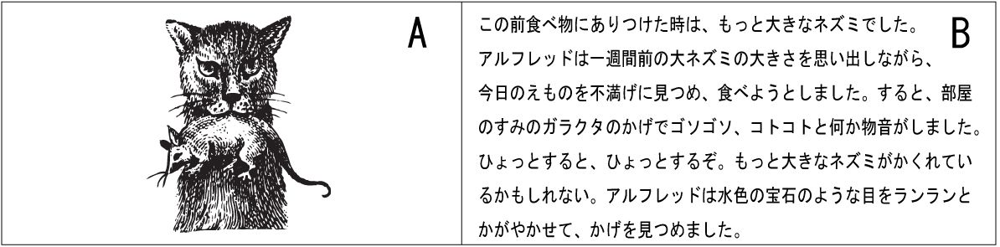
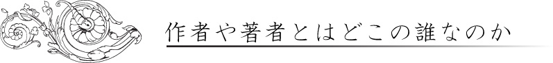
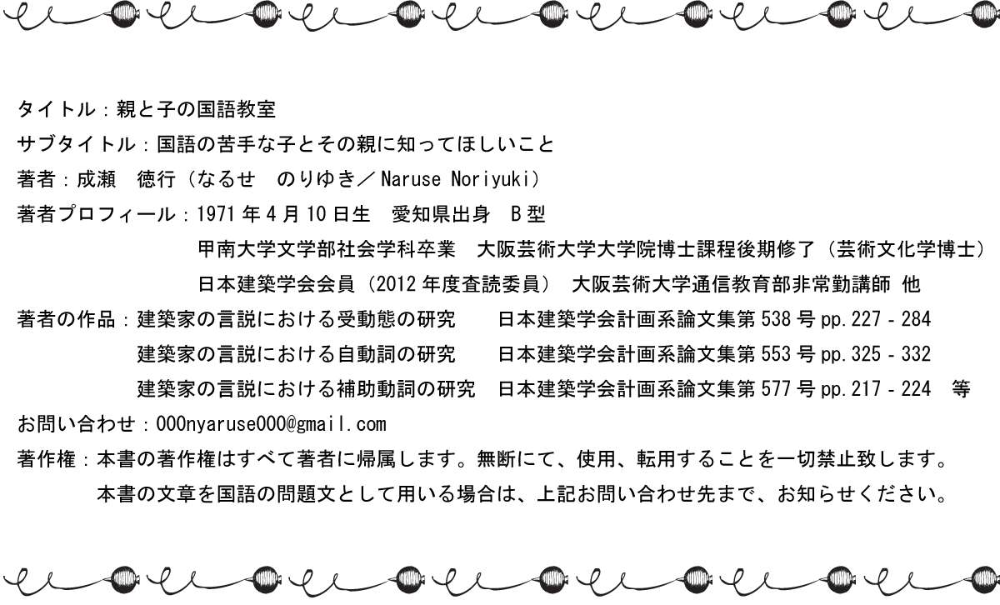

| 親と子の国語教室: 国語が苦手な子供とその家族に知ってほしいこと | |
| 成瀬徳行 | |
| (2015) | |
親と子の国語教室
成瀬徳行
親と子の国語教室
国語が苦手な子供とその家族に知ってほしいこと
第0章 はじめに
0-1 いまはむかし
私が小学校に通っていた少年時代、だいたい今から三十年ほど前の世界（1970年代後半から1980年代前半の世界）は、現代とは全く違う別世界でした。異世界と表現しても、大げさではないかと思います。その世界で何かの情報や知識を得るとき、専門の先生に直接聞くか、電話や手紙で尋ねるか、図書館や本屋さんで書籍を手に入れて調べるか、これぐらいの方法しかありませんでした。今のようにグーグル先生とかウィキペディア先輩は近くにいませんでしたし、そもそも彼らはまだ生まれてもいませんでした。つまり、何かを調べて（読んだり聞いたりして）書く作業に、とても時間のかかる世界だったのです。もちろん、書く内容に対する調査や考察にも手間はかかりましたが、それ以上に描写する言葉や使う漢字を調べる作業に膨大な時間が必要だったのです。それもそのはず、なにしろパソコンもインターネットもありませんでしたし、スマートフォンやタブレット端末も、もう最近ではすっかり時代遅れになってしまったガラ携（ガラパゴス携帯）もなかったのですから。おまけに、これはあまり関係ないかもしれませんが、今日では既に絶滅してしまったポケットベルさえもありませんでした。おそらく現代の生活の中で、大多数の人が一日一回は操作しているだろう情報端末が、全くなかったのです。
現代の生活と比較すると、三十数年前を生きて体験した私でさえ、当時は今と全く違う別世界だったと感じるのですから、その時代を体験していない子供たちは、たぶん想像すらできないでしょう。彼らは、過去の生活を異世界と感じるはずです。小学校でインターネットの使い方を教わっている今どきの子供たちからすれば、想像もできない異世界が、三十数年ほど前の日本に存在していたのです。
0-2 そういえば、あの頃は
もう少し当時を振り返ってみましょう。ワープロ（ワードプロセッサ）でさえ非常に高価な代物（東芝製、我が国初の日本語ワードプロセッサJW-10は1978年発売当時で価格630万円）でしたから、日記や覚え書き、親友との秘密のやり取りなどは、ノートや原稿用紙、あるいは便箋へ、全て手書きで行われていました。これらは現在のブログやメール交換に該当するのではないでしょうか。それから、子供同士の文章のやり取りといえば、特に女の子が、手書きで思い思いの可愛い文字（当時は丸文字と呼ばれていました）を開発しながら、交換日記という遊びをやっていました。かなり流行っていた遊びなので、読者の中にも、ひょっとすると交換日記を経験された方がいらっしゃるかもしれません。また、ラブレターなる古風な習慣も当時は健在で、きれいに字を書ける子は、その代筆を買って出たりもしていました。このような背景から、きれいな字を書くためのボールペン講座が、今以上に盛んだった記憶があります。現在、ボールペン講座の受講者数はどうなっているのでしょうか、謎です。
当時の小学生には（私もそうだったのですが）、ワープロに触る機会以前にそれを見る機会すらありませんでした。一方、大人でもワープロを使う人は少数派で、中学校で教師をしていた私の母親も、ガリ版（正式名称を謄写版／とうしゃばん／といいます）で学級通信を刷っていました、おそらく1980年代前半くらいまでは。大人も子供も、自分や友達の書いた文章が活字になったり、それを読んだりする機会など、めったにありませんでした。あの頃は、どう頑張っても自分の書いた文章は、いつまでたっても拙い（つたない）字のまま、用紙・紙の外へは決して出られなかったのです。
私たち日本人は、直近の数十年の間に、日本語の読み書きに関して、大きな変化を経験しました。今ここで、思い出しただけでも、さまざまな変化を指摘できたように。本当に大きな変化の波が、ごく短期間のうちに私たちの生活に大きな影響を与えたのです。そして、ほんの数十年前が、異世界に感じられるほどです。これは、歴史的に見ても劇的な変化だったと言えるはずです。私たちが、かつてどの時代のどの国も経験したことのないような文化的変化を、受け入れた数十年だったのです。
0-3 大きな変化の中で
ここ数十年の変化は、毛筆が万年筆や鉛筆へ変わるよりも劇的でした。百年以上前に、江戸時代の筆記スタイルから明治文明開化の筆記スタイルへと変化しましたが、そのレベルとは比較にならないくらい、今回の変化はドラマチックだったのです。単に、記述する道具が変わったというレベルに、おさまらないからです。今日、手紙を書く時間よりメールを打ち込む時間の方が長いことを思い出してください。本編でも詳しく書きますが、文章は書き記す対象から入力する対象へと変わりつつあります。そして、それは今回の激変後の筆記道具（パソコンや情報端末）に、大きく影響を受けています。新しい技術や道具が新しい感覚や感性を生み出すとよく言われますが、今、文章表現にまつわる新しい表現が、文化として根付こうとしています。
さらに、欧文タイプライターがパソコンに代わるよりも動的でした。アルファベットに代表される表音文字の入力が、比較的容易であることは理解できるかと思います。そこでは、入力文字がそれほど多くありませんので、電子的なハイテク技術を駆使しなくとも、ローテクの時代から、活字化入力が可能だったのです。我々の使う日本語も、ひらがなとかカタカナだけの表記なら、タイプライターの利用も可能だったかもしれません。こう考えると、ひらがな、カタカナ、漢字、記号などを複雑に織り交ぜて表現する日本語入力には、膨大な手間がかかると理解できるはずです。要するに、日本語入力の場合、表意文字である漢字への変換が大変で、一般の家庭では手軽に活字化入力ができなかったのです。ワープロソフトがなければ、この入力の問題は解決されなかったでしょう。この意味で、近年の西欧におけるIT化よりも、格段にダイナミックな変化と言えるのです。かつての自筆日記帳が、三十数年経過した後に、活字化され不特定多数の人に読んでもらえるブログに代わるなどと、誰が予測できたでしょう。
このような読み書きに関わる劇的な変化のただ中にあって、国語や現代文という教科が子供たちに何を伝えなければならないのか、また、どのような知識が子供たちに求められているのかを現代的な視点から考えていくこと、これが本書の第一の目的です。特に、受験を間近に控えて「国語や現代文がどうしても苦手だ」と感じている受験生、そしてなによりも「うちの子、国語が苦手で大丈夫だろうか」と悩み込んでいるご家族に、読んで頂きたいと思っております。本書が、子供たちの苦手意識克服とご家族の不安解消への一助になればと考えております。そして、国語や現代文の重要性や特殊性、さらには面白さを少しでも理解して頂ければと思っています。
0-4 本書の位置づけと使い方
まず、本書は国語の問題集ではありません。内容的な位置づけとしては、国語・現代文の設問に関するエッセイ集となります。あるいは、国語・現代文の設問とはいったい何なのかを追究する、子供たちのための設問哲学なのかもしれません。自分で書いていて、少し気恥ずかしいのですが...。読み進めていかれると徐々に理解が進むと思いますが、本書はある一つの切り口から、国語の設問を観察しています。その切り口は、皆さんが意外と忘れがちな、いわば盲点といっても差し支えない存在です。そしてさらに、この盲点とは、学校の授業や塾の講義だけでは、なかなか子供たちに伝えきれないことでもあります。それというのも、ご存じのように現在、学校でも塾でも異常に過密したスケジュールが組まれており、ゆっくり教科の本質を追究したり、子供たちと意見を交換したりする時間が取れないからです。
次に、本書には大きく分けて二種類の主要テーマが盛り込まれております。それは「時間」と「空間」に関わる内容です。ちょっと不思議に思われるかもしれませんが、ご心配には及びません。国語の「設問や表現」と「時間」とを関連付けて論じている箇所は、断章１と断章２の二つの章です。国語と時間を隣に並べてゆっくり考えてみると、意外と面白いことがわかるといったお話です。気楽に読んで頂ければ良いと思います。それから、第１章から第９章までの九つの章が、国語の「設問や表現」と「空間」とを関連付けて論じている箇所です。ここでいう「空間」とは、紙に打ち出された問題文のことを指しています。縦×横として存在している二次元平面上（原稿用紙・紙）に現れる文字集合（文章）を、私たちの身体ではどう把握しなければならないのか、またそのことから何がわかるのか、その一番基本的なところからお話を進めてまいります。先ほど、意外と忘れがちな盲点と説明した部分は、このあたりの切り口を指しています。それから、第10章は国語教科の重要性と特殊性について、第11章は回顧と展望について、それぞれ論じています。
また、章の中には主要なテーマ以外に、二次的なテーマが設定されているものもあります。その章番号と二次的なテーマを表すキーワードを以下にまとめておきますので、読解の参考にしてください。各キーワードは、対概念として示しておきましたので、理解を深める手掛かりになるかと思います。
第5章...「大局」と「局所」／「形式」と「内容」
断章1...「主観」と「客観」
第6章...「絶対」と「相対」／「形式」と「内容」／「図」と「地」
第7章...「形式」と「内容」
断章2...「伝達するための道具」と「思考するための道具」／「過去」と「未来」
第8章...「接続」と「切断」／「形式」と「内容」
第9章...「接続」と「切断」／「形式」と「内容」
第10章...「部分」と「全体」／「主観」と「客観」
最後に、各章の難易度は後半へ進むにつれて徐々に上がっていきます。国語が苦手な子供とその家族に知ってほしいこと、これがサブタイトルですので、専門用語や引用箇所も極力減らし、できるだけわかりやすく書いたつもりですが、二つの断章と第5章以降の後半部分は、やはり多少骨があります。本書全体は、中学三年生くらいの知識で充分読みこなせるようなレベルに設定してあります。このため、少し煩わしい言い回しも出てくるかと思いますが、ご理解ください。一方で、第4章までの内容は、小学五～六年生でも一人で読むことができるようにレベルを調節してあります。逆に言えば、第4章までの内容が、本書のエッセンスであり、最も重要です。ぜひ、この部分の理解を深めてください。小学五年生以下の子供たちへのアドバイスとしては、できれば、お父さんお母さんに一度読んで頂いて、自分のわからないところは知識を補ってもらう、あるいは、一緒に読んでもらう、このような使い方がベストではないかと思います。ただし、小学五年生以下の読者でも、今後中学受験を目指す子供たちには、なんとか第4章までは一人で読んでほしいと思っています。
それでは、さっそく本文を読み進めていきましょう。
第1章 蜘蛛のいと
1-1 秀才にも天才にもできないこと
国語の授業時間で、どんな秀才にも、たとえ天才であったとしても、決してできないことがあります。皆さんは何だと思いますか。もちろん私もそれができませんし、それを訓練して身に付けることも不可能でしょう。唐突に、クイズのような書き出しにしてしまいましたけれど、少し考えてみてください。どうでしょう、わかりましたでしょうか。それでは答えを発表します。その答えとは「二行同時に文章を読むこと」と「二行同時に文章を書くこと」です。試しに、今、目の前にあるこの文章を二行ずつ読んでみてください。できましたでしょうか。すぐに、そんなことは絶対に不可能だと理解できると思います。ちなみに、今現在、私も一文字ずつ一行ずつ丁寧にこの文章を書いているところです。私たちの身体能力では、そうせざるを得ないと言ってもいいと思います。「なんだそんなことか」「ごく当たり前のことではないか」とこの答えにがっかりする人もいるかもしれませんが、実はこれが国語の読解を勉強していく上で最も大切な約束事なのです。あたりまえのことだからこそ、馬鹿馬鹿しいほど基本的なことだからこそ、逆に誰もが忘れているのでしょう。世の中の出来事すべてについて言えることなのですが、最も大切なことは最も見えにくくなっているのです。しかし、この事実を知り、その認識を持っているのと持っていないのとでは、大きな差ができてしまうのです。これも、もう一つの事実なのです。
1-2 読書も作文も一音、一文字、一語ずつ
私たちの目は二つありますが、視点は一つです。それから口は一つで、話す言葉は一音ずつしか出てきません。文字を書くのも一文字ずつです。私たちの身体構造上、そうなっているので仕方ありません。努力して訓練を積んで、いくら頑張っても、おそらくこの身体構造上の問題を乗り越えることはできないでしょう。ですから、これは人間の宿命であり、変えられないさだめなのでしょう。大人も子供も、天才も凡人も、一行ずつ丁寧に読み書きするしかないのです。具体的には、縦書きの原稿なら右端の上から一行目を下方向へ進み、一番下の文字まで来たら隣の二行目の一番上にジャンプします。そして、さっきと同じように下方向へ進み一番下の文字まで来たら、隣の三行目にジャンプします。この繰り返しの動作が文章の読み書きなのです。
1-3 作文やスピーチがうまくできないのは
小学生に「昨日行った遠足の作文を書いてください」と課題を出すと、原稿用紙の前で数分間「うーん、うーん」と唸って、なかなか書き出せず、案の定、時間内に仕上がらず、結局宿題になってしまう。こんな場面に良く出くわします。昨日の遠足で経験した内容が楽しければ楽しいほど、多ければ多いほど、強烈で鮮明であればあるほど、原稿用紙の前で途方に暮れる時間が長くなったりもします。そんな時は子供に「それは、いつのことなの」「それは、どこでおこったことなの」「それは、だれのことなの」「それは、なんのことなの」「それで、どうしたの」とちょっとした合いの手を少しずつ入れてあげると、徐々に筆が進んでいく傾向にあります。作文の時間だけの特別な状況ではなく「昨日行った遠足のことを話してみてください」とスピーチの課題を出した場合も同じです。要するに、頭の中に多くの経験が記憶として詰まってはいるものの、それをうまく出せない状態にあるのです。このうまく出せない状態が「うーん、うーん」と唸っている時間なのです。コンピューターでしたら、ハードディスクがジージーと音を立て、砂時計の小さなマークが画面に出てくる時間です。子供の失敗談ばかり笑っていられないのが現実で、披露宴などでスピーチのマイクが突然まわってきたときなど、なかなか思うように話せない経験が我々大人にもあります。頭の中には語らなければならないこと、伝えたいことが山ほどあるにもかかわらず、否（いや）、山ほどあるからこそ、そうなってしまうのです。
1-4 蜘蛛の巣と文章 書く人の立場から
蜘蛛が巣を張るところをじっくり観察した経験のある人なら良くわかると思いますが、文章を書くという作業はその過程にとてもよく似ています。美しく立派な蜘蛛の巣も一度にパッと瞬間的にできるものではありません。蜘蛛は一本の糸を少しずつ根気良く出し、その糸を丁寧に慎重に巣の形へ仕上げていくのです。大変な作業です。文章を書く人の立場から考えれば、言いたいことや主張したいこと、つまり、意図は一度にパッと読み手へ伝えられないのです。さっきの小学生の失敗談を例に考えてみますと、大きく美しい蜘蛛の巣のイメージ（遠足での思い出、書きたいこと）は頭の中に記憶として確実にあるのですが、どこからどのように作っていったらいいのか（どこからどのように書いていったらいいか）わからなくなっているのです。そこで、先ほどの例では、合いの手を入れるように5W1Hのような対話をし、手助けをしているのです。あるいは、蜘蛛に少しずつ糸を出させるように、少しずつそして同時に順序良く「意図（いと）」を引き出すサポートをしているのです。「順序良く」この言葉と考え方が最も大切です。
1-5 蜘蛛の巣と文章 読む人の立場から
一方で、こんな小学生もいます。読解問題を解いていると「何が書いてあるのか、さっぱりわからない、イミフ」「一応、読んだけど全然わからない、イミフ」「イミフ、もうだめ、いや！」とすぐにあきらめてしまう子供です。しかたがないので音読をすることにして、声に出して読んでもらうと、平気で一行二行飛ばして読んだりします。学校の先生や塾の講師をしたことのある人なら、よくある光景だと共感してもらえると思います。大人でも数時間読書を続けていると、目の疲れから二行三行先に視線を移してしまうことがあります。子供でしたらなおさらですが、そんなときは自分で何か変だと気が付いてなんとか修正を試み、飛ばした行の直前の部分にまで戻り、読み進めていくのが普通です。何か変だなあ、という感じにとらわれるのは、文章の意図が把握できなくなりつつあるからおこるのです。ところが、ひどい場合だと、子供たちは文章の意図がつかめなくなってきていることさえも、行を飛ばしていることさえも、全く気が付かないまま、修正もせずに平然と読み進めてしまいます。これは、文章が一本の蜘蛛の糸のような仕組みを持っているという重要事項に気が付いていないのか、または、忘れてしまっているから、引き起こされる現象なのでしょう。
文章を読む人の立場から考えれば、作者の言っていること主張していること、つまり意図は一度にパッと伝わってきません。蜘蛛の巣の形を初めから俯瞰（ふかん／高いところから見下ろし眺めること）して、瞬時にとらえることなど、できるわけがありません。意図をつかむということは、ちょうど、出来上がった蜘蛛の巣を正確に理解するために、糸を一本一本たどっていき、根気よく全体の形を把握していくような行為なのです。一行二行ほど平気で飛ばして音読している場面では、美しい蜘蛛の巣に例えられる文章のかけらを、断片的に把握しているに過ぎません。それでは、作者の意図を完全に理解することは絶対に不可能です。全体を正確に把握しようと、根気よく努めなければならないのです。
1-6 途中で意図（糸）が切れてしまわないように
私たちが国語で学ぶ文章の内容は、一行ずつでしか伝えられないし伝わらない、そんな性格を持っています。その理由は、一文字ずつ一行ずつしか読めない（書けない）私たちの身体的特徴があるからです。視野を大きく広げて考えてみますと、どの言語についても同じことが言えます。英語でもフランス語でもドイツ語でも、みんな同じです。この点をよく理解してください。ここから先、この考え方でさまざまな問題点や対策が明らかになるからです。
そういえば、芥川龍之介の小説「蜘蛛の糸」に出てくる大泥棒カンダタも、地獄から極楽へ逃げ出すために、一本の細い蜘蛛の糸をしっかりとつかみ何万里も上っていきました。読書や作文も、なんだかその風景に似ているような気がしてきます。もっとも、この小説のエンディングでは糸がぷっつりと切れてしまい、まっさかさまに地獄へと転落してしまいますが...。私たちも、意図が途中でぷっつりと切れてしまわないように、充分気をつけましょう。
第2章 挿絵と文字
2-1 砂漠ばかり歩いてきた旅人などいない
ここまでの説明で皆さんは、文章が蜘蛛の糸のような性質を持っていると再確認できたと思います。そして、その糸一本を手繰り寄せてカンダタのように天上の極楽へ上っていけば、著者の意図を正確に把握できるとわかったはずです。それでは、このあたりまえ過ぎて誰からも忘れ去られてしまっている約束事から、どのような問題点や対策が指摘できるのか、順を追って考えていきましょう。ゆっくり進めていきますので、安心してください。
誰でも、子供の頃に挿絵の入った本を読んだ経験があると思います。初めから文字ばかりの本を読み漁って（あさって）いた人間など伝説上の人物です。現実世界にそんな人間は存在しません。小学校以前では、絵本をお母さんに読んでもらったり、苦労して自分で読んだりしたでしょう。そして時は流れ、小学生になれば、学校の図書館や学級文庫に挿絵入りの本が沢山あったはずです。小学校低学年対象の本には挿絵が沢山描かれているものが多いので、挿絵にあまり馴染みのない人は、この時期に（幼児期から小学校低学年までに）読むべき本をあまり読んでいないのかもしれません。その頃を思い出してみると、文字ページよりも挿絵ページの方が断然好きで、肝心の記述内容はそっちのけで、先に挿絵ばかりを鑑賞し、ひたすらページをめくった、そんな思い出のある人も多いのではないでしょうか。また、まだ文章を長時間続けて読むことに慣れていないこの時期、本の中で挿絵に出会うと、まるで砂漠の中でオアシスを発見したような気持ちになって、その場面でしばらく休憩をしたという経験の持ち主もいるのではないでしょうか。私も小学生だった頃には、オアシスでしばしの休息を取り、そしてまた砂漠の旅を再開する際、別れを惜しむような、なんとなく切ない気持ちをよく抱いたものです。
2-2 画像と文字の違い
さて、国語が嫌いで読書もほとんどしない小学生に「夏休みに、本を十冊読みなさい」と指示すると「めんどくさいから、イヤッ」「絵本かマンガなら、十冊くらいは余裕でクリアできる」などと、お決まりの台詞（せりふ）を返してきます。この台詞を聞いた多くの大人は、反射的に「読書は学習の基本だから、面倒でも、やはり文字の多い本を読みなさい」とか「絵本やマンガは、読書数にカウントしてはいけない」とか、こちらもお決まりの台詞で答えます。それでは、我々大人は、子供の語る「めんどくさい」とはどういうことなのか、なぜ「絵本かマンガ」なら読みこなせるのか、この点を根本的に考えたことがあるでしょうか。おそらく、そういう経験は少ないのではないでしょうか。ですから、第２章ではこの問題について、子供たちと一緒に、考えてみたいと思います。まずは、次の資料を見てください。これは、私が挿絵のあるページを想像して、作ったものです。小学生に推奨されている挿絵付きの本は、だいたいこのような感じだと思います。

左のAページは挿絵です。物語の主人公である野良猫のアルフレッドが獲物のネズミをくわえている場面が描かれています。そして、右のBページは文字のページです。主人公の感じた気持ちや場面の細かい設定が書き込まれています。では、みなさんに質問をします。Aページを初めて見たとき、一番先にどこを見たでしょうか。私は猫の顔、特に目のあたりが最初に飛び込んできました。野良猫の野性的な表情がとても気に入りました。キリッとしているところです。そして、すぐ次の瞬間には（ほぼ同時くらいの短い時間だと思います）捕まったネズミの顔に視点を移し、あきらめたような表情をしているな、と感じました。ちょっとかわいそうです。このような順序の説明を書くと「私は、アルフレッドの顔や目よりも先に、ネズミの顔が飛び込んできた」とか「いやいや、僕はアルフレッドのピーンと立った猫耳が一番で最初なんだ」などの異論が、かなりの頻度で出てくるのではないでしょうか。ちょっと変わった人は「ネズミのクルッと丸まった尻尾が一番先に目に入った」と主張するかもしれません。
それでは、第二の質問です。Bページの文章の部分で、皆さんは最初にどの部分へ視線を向けたでしょうか。ちなみに、私は文章の最初の文字「こ」です。そして、次の瞬間（ほぼ同時くらい短い時間だと思います）には、次の文字「の」に移しました。そして、数秒後には次の文章の頭の文字「ア」へと移動しました。Bページに関しては、私個人の、このような順序の説明を書いても、異論のある方は十中八九いないと思います。逆に、もし異論のある方がいらした場合は、ちょっと困ったことになります。
2-3 オアシスと砂漠の違い
先ほど砂漠とオアシスの比喩を用いましたので、その文脈で説明していきましょう。Aページのオアシスでさまざまな異論が出ることは当然であり、不思議なことではありません。なぜなら、挿絵はどこから先に見ても構わないからです。自分の好きな場所から、好きな順序で見ていいのです。さらに、初めに興味のある部分を凝視し、次に全体を総合的に眺めて把握したり、その反対に全体をパッと把握してから、徐々に細部の観察に入ったりもできます。ときには、一度眺めた部分にもう一回戻って鑑賞することもあるでしょう。部分と全体を行ったり来たりしながら、理解を深める人もいるかもしれません。つまり、オアシスでの視線の動かし方は、守らなければならない順序や序列はなく、完全に解放されており、全く自由にしていいのです。
しかし、Bページの砂漠地帯ではそうはいきません。どういう順序でこのページを見ていったのかに対して全く異論が出ないのは、視線の動かし方が老若男女を問わず、完全にカッチリと決められているからです。つまり、Bページでは絶対に守らなければならない堅いルールに従って、目（視線）を動かさなければならないのです。横書きなら水平方向に左から右へ、縦書きなら垂直方向に上から下へ。文字、単語、文章のそれぞれが行列を作っています。それらが登場してくる順序で見ていかなければなりません。そして、どれが先に登場してどれが後に登場したかが、とても重要になってきます。文字砂漠での視線の動きは単調な作業の繰り返しに徹するわけです。しかし、一方の挿絵オアシスでは自由気ままに視線をめぐらすことができるのです。
夏休みの読書課題でショックを受けた子供たちの「めんどくさい」や「マンガや絵本なら読める」という弁解の根源はここにあるのです。こう考えるとマンガは、ところどころ短い砂漠の旅があるものの、ほぼ全ページがオアシスの旅なのかもしれません。目（視線）の動かし方で考えるならば、非常に自由度の高い行為と言えます。長い文章を長い時間かけて読むことができないのは、長い時間、単調な視線の運動を強制されることに慣れていないからです。慣れていないから、すぐに疲れて眠くなったりします。一行二行飛ばして読んでしまうこともあるでしょう。そして、この単調な運動が粘り強く続けられるかどうかは、生まれながらの感性や天賦の才などではなく、ただひたすら訓練で（読書習慣で）身に着けるしかないのです。
第3章 顔文字から
3-1 大人だって挿絵が好き
大人になっても挿絵を好む人達がいます。例えば、新聞に連載されている小説で短い一日分に丁寧な挿絵が付けられている場合など「次回はどんな挿絵が付けられるのだろうか」と朝が楽しみになったりします。ごくたまに、挿絵が描いてあると、物語を読んで自分の想像する風景が、挿絵によって決められてしまうから嫌だ、と嫌う人もいますが...。一般的には、私も含めて大人も子供も、挿絵が大好きなのです。これを先ほどの視線の動かし方の議論へ還元して考えるならば、大人も子供も自由な視線の繰り方の方が、絶対的に好きですし楽なのです。六時間の読書の疲労と六時間の絵画鑑賞の疲労とを比較すると、この事実が実感を持って認識できるはずです。ですから、読書や物書きが長時間にわたる場合には、適度に目を休ませるコーヒーブレイクをお勧めします。かつて私も「少しは目を休ませないといけないよ、目を休ませる場合は遠くの緑を眺めなさい」と言われたものです。数時間図書館で読書した後、近くの窓から遠くの山並みをボーっと眺めたりしました。
しかし、活字を追う読書が辛いからと言って、規制に従って視線を送る訓練を怠れば（活字を読む行為を怠れば）、やはり人は知的活動に支障をきたすでしょう。本から学ぶことは非常に多く、そして本は人生を必ず豊かなものにしてくれるからです。読書が人間形成や人格形成にとって、とても重要だという前提を確認してから次の議論に入ります。
3-2 今日、私たちが読み書きにかける時間
顔文字のお話をする前に、それが生まれてきた時代背景を少し思い出したり考えたりしてみましょう。1980年代、私が高校生だった時代は、若者の活字離れが社会的な危機として盛んに叫ばれた時期でもありました。このような警鐘がいつから鳴らされ始めたのかは定かではありませんが、遅くとも私の高校時代にはすでに多くの人がこの警鐘に賛同し、発言を繰り返していました。例えば「若者が漫画ばっかり読んでいるのは（アニメばっかり見ているのは）いかがなものか」とか「いい年をしたサラリーマンが電車内でマンガ雑誌を読むなどとは、けしからん」などの批判や報道をよく目や耳にしたものです。現在（2014年）でも、大手出版社書籍の発行部数を引き合いに出して、若者の活字離れを指摘する記事を時折見かけます。これはある一面では事実なのだろうと思いますが、多少の注釈が必要ではないかと私は考えています。つまり、若者の活字離れを出版される書籍の部数などで判断するのは、いささか乱暴な観測ではないかと思うわけです。本屋さんで本が売れないからと言って、若者が活字に触れる機会を減らしていると断言するのは、流石におかしいのではないでしょうか。
3-3 現代生活の中に溢れる（あふれる）活字
1990年代後半から、私たちの日常生活の中へ猛烈な勢いで侵入してきた情報端末のことを考えると、むしろ現状は逆ではないのかと思うのです。その勢いは、侵入と言うより侵略と表現した方が適切かもしれません。その情報端末とは、携帯電話とパソコンのことです。携帯電話にメール機能が付くようになって以来、広告メールを始め、友人からのメール、そして会社からのメール、果ては親からのメールと、新着数がゼロという日はとうとうなくなってしまいました。郵便ポストに手紙の来ない日は、かなりあるのにもかかわらずです。同時にパソコンへも大量のメールが送りつけられてきます。私のパソコンにも一日で三十件以上のメールが送信されてきます。実は、この数字は氷山の一角で、スパムなどの悪質な広告メールは自動的にゴミ箱へ捨てる設定にしていますから、その数もカウントすると一日に膨大な件数のメールを受け取っているのです。忙しくて、数日メールソフトを起動しないと百件以上の新着メールがたまっていたりもします。もちろん、携帯の方に送られてくるメールも、一日で三十件以上になります。私は、交友関係が多岐にわたる方ではないので、おそらく、この件数は平均的な数量か、あるいはそれ以下ではないかと感じています。狭い世界で生きている、いい年をした私ですらこんな状況なのですから、交友関係の広い若い人たち（中学生や高校生）が一日にどれぐらいのメールを送受信しているのか、推して知るべしではないでしょうか。そして、最も重要なことは、私達は広告以外の受信したメールを読み、次の作業として返信のメールを書いている事実です。さらに、メールだけでなく、掲示板やネットサーフィンを楽しむ人たちは、より膨大な時間を日々読み書きに費やしています。
もっとも、そこで取り交わされる内容や質が推薦図書と同程度に高尚であるのか、あるいは日本語として見習うべきものなのか、などの堅苦しい指摘はあるでしょうが、ひとまず単純に活字に触れる時間で考えてみましょう。察しはつくと思いますが、現代の生活では、読み書きに費やす時間はかつてのレベルをはるかに超え、驚くほど長時間になっているのです。少なくとも活字離れなどという感覚からは、かけ離れた現実がそこにはあります。むしろ逆に、生活の中に膨大な量の活字が入り込んできているのが、実際の状況ではないでしょうか。活字と触れ合う機会が、新聞や書籍／雑誌しかなかった時代と比較して考えてみてください、すぐに理解できるはずです。ですから、IT革命の真骨頂（しんこっちょう）は、メールやインターネット検索を通じて、日常生活の中に活字が大量に入り込んで来る現状にあると、私は理解しています。
3-4 同じ顔文字でも
さて、顔文字登場の歴史的な背景が描き出されたところで、本題に入りましょう。私たちが受信するメールの多くには、(公) (・皿・) (・へ・) などの表現が頻繁に付けられています。そうです、皆さんもよくご存知の顔文字です。顔文字は、メールやインターネットでのコミュニケーションが確立する以前には、全く存在していなかった表現です。顔文字は今まで存在していなかった、ここを別の言い方で表現しますと、メールやインターネットの普及と共に生み出されてきた新しい表現、となります。既存のさまざまな記号や文字を組み合わせて、一つの大きな文字を創作しているのです。その昔、似たようなものに、ひらがなで愉快に滑稽な顔を表現する「へのへのもへじ」（最近ではあまり見かけませんが、どこへ行ってしまったんでしょうか）があることにはありました。年配の方は、間違いなく知っているでしょう。しかしそれは、残念ながら顔文字のように一行内におさまる形式ではありませんでした。この「へのへのもへじ」は、一行におさまらないという意味で文字の系列には入りません。どちらかといえば、挿絵の系列に入るでしょう。
そして、あまり実感がわかないかもしれませんが、顔文字は日本人だけでなく外国人も使っています。時々、外国人からメールを受け取ると（もっとも、最近では彼らも日本式の顔文字を使ってきますが）:-D 8-) 8->こんな顔文字が付けられています。これらは、少し見慣れてこないと、何を表現しているのかよく解りません。ここで少し解説してみます。
始めの、:-D は大きく口を開けてハハハッと笑っているという意味です。次に、8-) はメガネを掛けている人です。最後に、8-> はメガネをかけてすましている表情です。日本人の使う顔文字と外国人の使う顔文字は、明らかに違います。そして、私たちは、彼ら外国人の使う横倒しの顔文字をめったに使いません。
では、なぜこのような違いが出てくるのでしょうか。
3-5 顔文字と外国語
まずは、どうして外国人の使う顔文字が横向きになっているのかを考えてみましょう。これに関して様々な仮説が立てられると思いますが、私は、どうも文章の進んでいく方向と文字の書かれる順序に関係があるような気がしてなりません。つまり、第2章で考えた読み書きにおける「目の動かし方」との間に、深い関係があるのではないかと思うのです。英語やフランス語では、文章の進み方（目の動かし方は）左から右と決まっています。さらに、筆記体を考えると良くわかると思うのですが、アルファベットの綴りもほぼ（もちろん例外もありますが）左から右に書き順が設定されています。欧文では、スペルのレベルでも構文のレベルでも文章のレベルでも、左から右への目の動きが支配的なのです。それ以外の目の動きのバリエーションは、ほぼ皆無と言っていいと思います。常に、左から右へ慣性の法則が働いている（左から右へ視線が引っ張られている）ような状況です。この条件下で、新しく創作された大きな文字（顔文字）も、当然、この規定にのっとって作られたと考えるべきです。一文字の中にでさえ流れや方向性があるのです。ですから、我々日本人からすると、ちょっとおかしい、横倒しになっているような顔文字も、実は左が絶対的に先頭（最初に読んだり書いたりする部分）で右が絶対的に末尾（後に読んだり書いたりする部分）という認識から考え直してみれば、極めて真っ当な表現なのでしょう。これは、ちょうど川の上流から人が仰向けに流れてきているような感覚なのだと思います。もちろん「川の流れ」とは文章の流れる方向（左から右への流れ）であり、「仰向けに流れてくる人」とは外国人の使う顔文字のことです。彼らの頭の中では、次のようなイメージになっているのでしょう。川の流れ（文章の流れと目を動かす方向）を矢印で表現しています。
イメージ... 先→→→ :-D →→→後
3-6 顔文字と日本語
それでは、私たちの使う顔文字はどうなっているのでしょう。同じ考え方で日本式顔文字についても、考えてみましょう。日本語の表記には大きく分けて二つの形式が存在しています。言うまでもないことですが、縦書きと横書きです。インターネット、それからメールや掲示板が一般に普及する以前では、多くの場合、縦書きを採用していました。現在でも、新聞や書籍では圧倒的に縦書き形式のものが多いのも事実です。私たち日本人は長い間、縦書きを愛用してきたのです。言い換えるならば、日本語は縦方向に進んで行くのが自然な言葉なのです。すると当然、一文字の筆記も効率を考えて上から下へと設定されています。漢字やひらがな、カタカナの書き順を考えれば納得がいくと思います。文字の方向性も縦方向が支配的なのでしょう。日本語では縦方向（上から下）に慣性の法則が働いているのでしょう。ですから、メールやインターネットで頻繁に使われだした横書きでは、文章の流れる方向（左から右へ）と一つ一つの文字の持つ方向性（上から下）が分裂しているのです。ちょっと不自然な状況になっています。川の流れの例えで説明するなら、これはちょうど川の上流から、船上に立っている人が流れてきているような感じではないでしょうか。あるいは、忍者が水面に立ち上流から下ってきているような感じではないでしょうか。もちろん「川の流れ」とは横書きにおける文章の流れる方向（左から右への流れ）であり、「船上に立っている人（水面に立つ忍者）」とは日本式の顔文字のことです。私たちの頭の中では、次のようなイメージになっているのです。川の流れ（文章の流れと目を動かす方向）を矢印で表現しています。
イメージ... 先→→→ ↓(・へ・)↓ →→→後
3-7 顔文字からわかる文字認識
顔文字を使う意義を、文章では伝えられない微妙な雰囲気や感情を的確に伝えるために使っている、と考える人たちがいます。この主張は部分的には正しいと思います。しかし、文章で伝えられない細かな感情などというものは、縦書きが主流だった時代にも存在したと、想像できます。季節の挨拶状や年賀状を思い出してみましょう。挿絵や面白いロゴなど自由に書き入れてハガキをデコレートしていたと思います。上手いか下手かはさておき、ハガキや便せんにちょっとした絵を描き入れる作業はとても簡単です。色鉛筆やカラーペンで、スラスラっと描けます。ところが、メールやインターネットの入力では、そう簡単にはいきません。挿絵を描くには、特別なソフトを使わなければなりません。あるいは、ＡＡ（アスキー・アート）と呼ばれる挿絵を作るには、それなりの時間とセンスを要します。最も手軽に作成できるのが顔文字なのです。手書き縦書きが主流だった時代に顔文字があってもよさそうですが、おそらくその当時では、手書きの挿絵やロゴがその役割を担っていたのでしょう。ＩＴ革命以降、文章は書き記す対象ではなく入力する対象になってしまいました。当然ですが、入力するには、既存の文字をキーボードで打ち込まなければなりません。入力できる限られた文字や記号を駆使して、なおかつ横書きの規制を受け入れ、一行の数マスの範囲の中で何とか微妙な雰囲気や感情を表現するために考案されたもの、それが顔文字だったのでしょう。
しかし、私たちが長年培ってきた文字への認識は一朝一夕には覆らなかった、これも顔文字をめぐる事実なのです。つまり、私たちは、文章レベルでは横書きの制約にうまく対応できるものの、さらに深層の文字そのものの方向性に関しては、旧来の縦方向の習慣をそのまま受け継いでいるのです。この点が、顔文字に対する日本人と外国人との間にある感覚の差であり、ことの真相ではないかと思うのです。
ここまでの内容をまとめておきます。文章を読んだり書いたりする時に、視線の動かし方の制約が非常に重要となります。それは、あたかも蜘蛛の糸一本を、根気よく追っていくような作業でした。横書きならば左から右へ、縦書きならば上から下へ規則的な流れが存在していました。そして、文章を形成する最小単位である文字のレベルにおいても、この流れが存在しているのです。川底近く、深いところ、いわば深層構造でも（顔文字でも）確実に流れが存在していました。この流れが存在しているから、だからこそ、その流れの中で何が先なのか後なのかという意識も生まれてくるのです。私達は、この流れや方向性を無意識のうちに身に付けています。外国人の使う顔文字を眺める時、この自然と身に着いた感覚（これは文化と言えるかもしれません）が、初めて浮き彫りになり、彼らとの違いや自分たちの特徴を発見することができるのです。
第4章 この指示語（単語や節を用いて順序・序列を理解させる設問）
4-1 目の動きと文章の流れ
前節では、日頃なにげなく使っている顔文字から出発して、一文字にも（顔文字にも）、一文にも、文章全体にも、それぞれのレベルで流れがあるとの結論に達しました。文章とは、川の流れが川上から川下へ、順序良く進んでいるようなものでした。そして第1章では、この辺りのお話を蜘蛛の糸に例えましたが、それも同じことです。文章の執筆過程を、蜘蛛が巣をつくる手順に見立てて説明してきました。ここでは、この両者の共通点を少し整理しておこうと思います。
川の流れには、水源地と河口があります。スタート地点とゴール地点が、あるということです。同様に蜘蛛の巣を作っている糸にも、始点（スタート地点）と終点（ゴール地点）があります。それから、川の流れは途中で枝分かれがあるにしても、河口まで一本の道筋として観察できます。蜘蛛の巣も丁寧に分解していくと、一本の糸になります。このように両者は、一見しただけでは全く別物ですが、目に見えないところで共通点を持っています。このような関係にあるものを、同じ構造を持っていると言い表します。そして、何よりも両者には流れが存在していました。
一方で、私たちの使う言葉、日本語の文章にも同じ構造が見て取れます。書き出し（スタート地点）もありますし、終わり（ゴール地点）もあります。それから、私達の書いた文章も改行を取り除いていけば、長い長い一筋の文字集合になります。もちろん、流れもあります。この事実から考えて、この三者は（川も、蜘蛛の糸も、私達の読み書きする文章も）同じ構造を持っているといえます。もちろん、それぞれの出来上がり、完成形態が異なりますので、一見しただけでは全くの別物として目に映ります。しかし、構造上では、流れのある一本の道筋には変わりないのです。
そして、この流れのある一本の道筋に対して、私たちは順序良く視線を送らなければなりませんでした。絵画の鑑賞とは違い、目の動きは規制されていたはずです。読書では、各レベル（文字・一文・一章）の流れを、目で追い、根気よくつかむことでした。ですから、国語の読解問題を解く作業も、それぞれのレベルで流れをつかむ行為である、と断言できるのです。何となく理解できましたでしょうか。
そうそう、そろそろ目が疲れてきた人は、遠くの風景を眺めに、しばし散歩にでも出かけましょうか。
4-2 内容はいつも絶えず直線的に出現してくる
もう少し、ここまでの内容のまとめが続きますが、どうぞおつきあいください。
さて、文章は蜘蛛の糸一本か、一筋の川の流れか、このような形式的性格を理解すると、そこからとても重要なポイントが派生してきます。そして、この重要なポイントをしっかり押さえていないと、国語のテストや試験でとても苦労することになるのです。それは、文章において、内容はいつも絶えず直線的に出現してくるという真実です。文章とは流れのある一本の道筋、だからこそ、文章を読み込んで内容を理解しようとすると、一文字ずつ一行ずつしか理解できないのです。そして、その一行ごとに込められている内容・意図は、まるで一本の直線のように、順序良く頭へ入ってくるのです。これは私たちの身体的な特徴からも、裏付けられていました。私たちは二行同時に読めませんから、丁寧に一文字ずつ目で追い、一行ずつ処理していかなければならない点です。
逆の立場、書き手の立場で、このことを考えてみましょう。書き手もこの状況に変わりはありません。伝えたいことは、一文字ずつ一行ずつしか表現できませんでした。作文を書いている状況を、思い出してください。二行同時には書けませんでした。しかも、伝えたいことは瞬間的にパッと書けませんので、順序良く言葉を並べていかなければなりません。また、書き手は同時に、読み手へ自らの主張やストーリーを、効果的にそして魅力的に伝えなければなりません。このとき書き手は、用いる単語や言い回しにも工夫を凝らしますが、いかに効率的にそして効果的に単語や文章を並べるのか、この点に最大限の工夫を凝らすのです。今ここで説明している「並べる」という意味は、一文中での単語の順序、一段落中での文章の順序、一章中での段落の順序、作品全体では各章の順序と、さまざまなレベルで序列をつけるということです。この作業を通じて、書き手は流れ（文章）を作っています。起承転結という文章の記述形式をご存知かと思いますが、これも、章や段落レベルでの序列の典型と言えます。
読み手の立場でも書き手の立場でも、両者に共通する重要なポイントは、文章とは直線的な進行であるから、先に読むのか後に読むのか（先に書くのか後に書くのか）、この「並べる」意識に尽きると断言しても、過言ではありません。あえて極端なお話をしますが、文章の読み書きにおいて、私たちが意識しなければならないことの六～七割は、この意識と言ってもいいと思います。それでは、この重要なポイントを、国語・現代文の実際の設問を観察しながら、ゆっくり考えていこうと思います。
次節からは、文章の流れ（順序良く並べられた言葉）という重要なテーマが、どのような形で（どのような設問として）私たちの前に現れてくるのか、この点を検討していきましょう。もちろん、文章の流れ（順序良く並べられた言葉）に対しては「先か後か、どのような順序で読むのか」という「順序の意識」で対応しなければなりません。まずは、一番わかりやすい単語と節のレベルで、考えていきましょう。
4-3 大切なのは順序の意識 出題者の意図
それでは実際の国語・現代文の授業で、この重要な「順序の意識」が、どのような形で私達の前に出現してくるのでしょうか。少し考えてみようと思いますので、次の設問を見てください。この問題を解きなさい、などと野暮なことは言いませんのでご安心ください。
問１ 「①それら」の内容を指し示す部分を、本文中より二十字程度で書き抜きなさい。
これは、ごくありふれた設問です。問題文を読んで「①それら」の指示語の内容を問う形式です。指示語の種類（それら以外、これ、あれ、前者、後者などの種類）と解答条件（本文中より二十字程度で書き抜きなさいの部分）が少し変更された同種の設問に、たいていの人は出合った経験があるでしょう。そのとき解けたかどうかはさておき、この設問の出題者が、受験生のどんな能力を試したかったか、つまり、出題意図を考えたことはあるでしょうか。問題を解くのに精一杯で、立ち止まってゆっくり考えた経験は、やはり少ないと思います。少し考えてみましょう。
この手の設問に対して、学校や塾の先生は「指示語問題の場合、九十％以上の確率で解答となる部分は（①それら）よりも前にある！」と解法パタンを教えてくれます。かつて、私もそう教わりましたし、そう教えてもいました。解答を導き出す手法としては大正解です。ほとんどの場合、指示語の内容はそれよりも前に存在しています。時々、例外的に「あれは、二十年前のことだった...」のような書き出しで始まる物語もありますが、そのような物語が問題文となり、冒頭箇所「あれは」に傍線が引かれた設問を見たことがありません。もし仮に、そのような設問に出会ったとしても、それは、かなりひねくれている珍問中の珍問ですので、無視して構わないと思います。
出題意図として、問題文の内容把握は言うまでもないのですが、それ以上に出題者は、読解における「順序の意識」を受験生が持っているかどうかを、試しているのです。先に書いてあること後ろに書いてあること、この区別や意識がしっかりできているのか、この点から、受験生は、ふるいにかけられているのです。問題文を読み込んだ時点で、該当する指示語より先の内容を正確に把握できているのかどうかを、設問でチェックされるというわけです。
いきなり指示語が登場する場面は、ほとんどありません。これは、先程の解法パタンの説明と同じことを言っています。必ず指し示す内容が、すでに、どこかに出てきているはずです。九十％以上の確率も正しいと思います。そうでなければ、文章中で指示語を使う意味がありません。指示語の役割は、文章の流れの中で、同じ単語を複数回使うことによって生じる、単調さやまわりくどさを解消する機能といえます。ですから、指示語の内容は、指示語よりも前のどこかに必ず書いてあるのです。こうなると、指示語問題の解答を問題文中のどの部分から探し出せばよいのか、あらかた見当がついてくるはずです。ちなみに、指示語を使わずに文章を書くと、読むのが大変になります。逆に、指示語ばかり出てくる文章も、内容がよくわからなくなってきます。
論説文でも小説でも、問題文を読み込んでいるとき、傍線の付いた指示語に出会ったら、これまでたどってきた道筋を少し振り返ってください。まあ、問題文の中で指示語に傍線がつけられていて、後の設問で触れていない、無視している、なんてことは確実にありません。間違いなく、設問で触れられることになります。ですから、読み込みの途中でも、すぐその場で処理する方が、効率的だと思います。傍線付きの指示語が現れた時点で、そうだ、この指示語の内容は既出（きしゅつ／もうすでに先に書かれている）だ。これ以前を探せば、どこかに必ず答えがあるはずだ、と瞬時に思いつきさえすれば、これ以上簡単な設問はありません。出題者の意図を完全に理解し、設問を難なくクリアできるでしょう。
では、この処理とは、文章の流れを少しさかのぼり、その指示語が指し示す部分を探す作業です。具体的には、鉛筆で、該当箇所を囲んでおいたり、できれば答えを解答用紙に書き込んでしまってもいいと思います。この作業は、問題文の深い内容把握にもつながりますので、お勧めします。ぜひ行ってください。指示語問題に関しては、問題文を一度通読した段階で、全ての解答を見出しておく、これくらいの意気込みでいいと思います。問題文を読み込みながら解答の下準備をしておく、この意識でもいいと思います。逆に、一度通読してから、改めて指示語の問題を解こう、などと思っていると、再度流れをつかむための読み込みが、部分的にしても必要となってきます。これでは、時間がもったいないです。テスト時間は限られていますので、できるだけ効率的に正確に解答できるよう工夫することも大切です。問題文の流れが、うまく把握できている、まさにその場で、すぐに「順序の意識」を持っていることを出題者へアピールしてください。そして、これが読解問題における単語（指示語）レベルでの順序・序列を理解させる設問です。
解答となる部分を見つけたら、その部分が正しいのかどうかを、チェックすることも大切です。これは、最後の見直しの時間に実行してもいいのですが、どちらかというと解答した直後の方が、効果的だと思います。チェックの方法は、抜き出した部分を問題文中の傍線部指示語（例えば「①それら」）の位置へ代入してみる（あてはめて読んでみる）作業です。代入して文章の意味がそこだけおかしくなるようだと、もう一度探さなければなりません。代入してスムーズに文章の流れが継続されているのなら、それで正解となります。さあ、自信をもって頑張りましょう。
4-4 順序・序列というと
少し前から教育の現場では、順序・序列という概念が、あまり感心しない考え方のように扱われています。運動会の徒競走で全員が横一列でゴールをした、などの話題が問題提起として報道されていることも、ご存じかと思います。もちろん過度の競争や順位へのこだわりは、私もいかがなものかと感じます。
しかし、少なくとも国語の文章読解に関しては、この順序・序列の考え方をしっかりと持って頂きたいと思います。ここまで丁寧に説明をしてきた文章の構造上の特性からも、さらに深層の構造である人間の身体的な特性からも、そう思うのです。前に書かれているのか、後に書かれているのかが、最も重要なポイントです。こうなると必然的に、順序・序列を意識せざるを得ないわけで、「順序の意識」が最重要のテーマになってくるのです。そのことを、はっきりと意識してもらうための例として、一番わかりやすいのがこの指示語の設問なのです。
昨今、順序・序列（順序の意識）というと、ネガティブなイメージを持ってしまいがちではありますが、よく考えてみると、私たちは人気商品を買うときや満員電車に乗車するとき、整列して順番をしっかり守っています。社会的なマナーですね。順序・序列（順序の意識）も環境や場面によっては、ルールであったり美徳であったりするのです。実は、世の中には、皆が同時にいい思いをしたり、皆の希望が同時にかなえられたりすることの方が、絶対的に少ないのです。本当は、皆が同時に一緒にとか、ずるをして横から割り込むとか、そういう意識は日常生活でも文章の読解でも、持ってはいけないのです。
順序・序列をしっかり守って、正解を目指したいものです。

第5章 そして接続詞（文章を用いて順序・序列を理解させる設問）
5-1 接続詞が作り出す論理構成とニュアンス
第4章で考察した指示語問題と同等か、あるいはそれ以上の出題頻度を誇る設問が、国語のテストには存在します。そう、接続詞補充の問題です。指示語問題と同様、この設問も非常にシンプルで、いつの時代も出題されるポピュラーな設問の一つです。この両者は、必ずこれからも、読解問題の中に登場し続けるでしょう。出題されなくなる事態は、考えられません。そして、国語の読解力を試すことに関して、とても優秀な設問なのです。両者は、順序・序列を理解させる問題群のうちで、双璧（そうへき／二つの優れた宝物のこと）をなしています。
おそらく、皆さんもこの手の接続詞に関する設問を、幾度となく経験しているでしょう。問題文のある場所が空欄になっていて、そこへあてはめる接続詞を選択肢の中から選び出す形式が、一般的な設問のスタイルです。先ほど説明した指示語問題は、単語から節くらいまでの範囲で、順序・序列を理解させる（理解しているのかを確かめる）設問でした。それに対して本章で扱う接続詞補充問題は、もう少し範囲を拡大して、受験生の読解力に挑戦してきます。その挑戦を、自信を持って快く受けてください。ここでの考察すべき範囲は、一文章のレベルにまで、拡大されてきます。もっとも、設問の中にはもう少し範囲を拡大して、段落単位まで考察に含めなければならないものも（転換の接続詞なども）ありますが、基本的には一文単位の前後関係を考慮して、解答を導きます。
ここで、接続詞の種類と役割を以下にまとめておきます。また、各役割の代表的な接続詞も例示しておきますので、念のためご確認ください。
順接／だから、したがって、それで／前のことがらが、後のことがらの順当な原因・理由などになっているもの。
逆接／しかし、だが、けれども、ところが、でも／前のことがらから予想されにくい結果が、後のことがらに示される、そのような関係を結びつけるもの。
並立／また、ならびに、および／前のことがらと同じ内容を、対等の関係として結びつけるもの。
添加／そして、さらに、しかも、／前のことがらに、後のことがらをつけ加えるもの。
換言／つまり、すなわち、ようするに／前のことがらを詳しく解説したり、言い換えたり、まとめたりするもの。
例示／たとえば、いわば／前のことがらの例を示したり、具体例で分かりやすく解説するもの。
理由／なぜなら、というのは／前のことがらに対して、論理的に詳しい説明を加えるもの。
補足／ただし、なお、ちなみに、もっとも／前のことがらに対して、内容を補ったり事例や前提条件などを付け足すもの。
選択／あるいは、または、もしくは、それとも／前のことがらと後ろのことがらを対比したり、どちらかを選ばせたりするもの。
転換／ところで、それでは、さて、では／前のことがらから話題を変えるもの。
知っておきたい接続詞の役割と種類は、これくらいかと思います。もちろん、例示したもの以外にも多くの接続詞が存在しますが、ここでは、以上の分量にとどめておきます。名は体を表すの言葉通り、接続詞は、何かと何かを接続する役割を担っています。何と何を接続するのかというと、接続詞を挟んで前のことがらと後ろのことがら（本書の主旨に沿えば、先に書いてあることがらと後に書いてあることがら）です。
もう少し詳しく解説しますと、接続詞とは前のことがらと後ろのことがらが、どのような位置づけで接続されるのかを決めるものです。前後の論理構成（あるいはニュアンス）を決定するもの、と言い換えてもいいでしょう。例えば、設問⓪のような例文が提示され、（ ア ）の中に接続詞を補充する場合、さまざまな可能性が考えられます、実験してみましょう。ここでは、問題文は存在しないものとして考えてください。単純に、設問⓪が示されている状態で、考えを進めていきましょう。そして、①～④まで、別々の接続詞を選択することで、前後の論理構成（あるいはニュアンス）が微妙に変化しますので、体感してください。ちなみに、ニュアンス／nuanceとは「微妙な言葉の意味」とか「話し手の意図」を意味するフランス語です。
明日は何もすることがない。（ ア ）映画を見に行く。...⓪設問
明日は何もすることがない。（だから）映画を見に行く。...①順接
明日は何もすることがない。（しかし）映画を見に行く。...②逆接
明日は何もすることがない。（つまり）映画を見に行く。...③換言
明日は何もすることがない。（ただし）映画を見に行く。...④補足
①の場合だと、明日は何もすることがない、しかたがないから暇つぶしに映画でも見に行くとするか、こんな論理構成になります。最も理解しやすい形ではないでしょうか。
②では、先輩や上司から「君、明日は暇なんだろう、悪いけど休日出勤してくれないか」などと言われたのかもしれません。明日は一応何もすることがない、しかし、映画鑑賞には出かけるのです、と物腰やわらかくおことわりの返事をしている、そんなニュアンスなのでしょう。
続いて③は、この発言者は、相当な映画好きです。彼は、日頃から暇さえあれば映画館に入り浸っているのでしょう。彼の頭の中では、何もすることがないなら当然映画を見にいく、と決まっているのです。彼にとって暇な時間とは、映画鑑賞の時間とイコールで結ばれる関係にあります。映画鑑賞は、彼にとってそれほど重要な行事なのです。
最後④の場合はどうでしょう。②の雰囲気に似ているかもしれません。また、発言者は映画鑑賞をそれほど重要な行事ととらえていないようです。③のもつニュアンスとは大違いです。彼にとって、映画鑑賞は、明日することの中でも補足的な位置づけになっているのです。
①～④までのそれぞれの論理構成とニュアンスが、理解できましたでしょうか。文章単位の前後関係で、接続詞がどのように働くのか理解できたと思います。
5-2 接続詞補充問題における出題者の意図
ここで、もう一歩踏み込んで考えてみたいのですが、上記の四種類のニュアンスを思い出してください。それぞれ映画鑑賞に対する思い入れや位置づけが、微妙に異なっていました。映画鑑賞が大好きな発言者もいれば、それほど重要な行事と考えていない発言者もいました。そこでは、設問⓪に対して、さまざまな接続詞の可能性を吟味したので、四種類の可能性が導き出されました。設問の形式で考えるならば、設問⓪は、問題文から抜き出されたものではありませんでした。設問⓪は問題文とは関係のない存在で、それ単体として設問になっていました。ですから、さまざまな接続詞を挿入することが可能になったのです。仮に、問題文のどこかに、設問⓪の部分が埋め込まれていたら、四種類の解答が出てくるはずがありません。読解問題では解答は一つのはずです。
先ほどの実験で、私たちは四種類の接続詞を（ ア ）にあてはめてみて、四種類の論理構成やニュアンスを作ってみました。想像力をフルに働かせました。それぞれの場面設定や前提条件、発言者の性格や価値観に至るまで、こと細かに想像を膨らませました。しかし、実際の読解問題では、このような想像力をできる限り働かせないのが鉄則です。それもそのはず、問題文には場面設定や発言者の性格が、既に（ ア ）よりも先の部分に、もう書き込まれているからです。例えば、②の設問で（しかし）が解答として有効になる場合では、必ず「明日は何もすることがない。しかし、映画を見に行く」の前の部分のどこかに、「君、明日は暇なんだろう、悪いけど休日出勤してくれないか」が、書き込まれているというわけです。
少し難しい対義語に「大局」と「局所」があります。この対義語で使われている漢字は、四文字とも小学校で習うものばかりですので、ここで覚えておきましょう。「大局」は大きな流れを意味し、文章やものごとの全体を観察して、総合的に考えられることや言えることを意味する言葉です。一方の「局所」は、文章やものごとの一部分を観察して、部分的に考えられることや言えることを意味する言葉です。先ほどの実験で、①の接続詞（だから）は一番わかりやすい形だ、と説明しましたが、それは設問⓪を局所的に観察しても、それほど違和感のない解答になっているからです。一方、②～④の接続詞は、ちょっとした解説（場面設定や発言者の性格など）を補足説明してあげないと、違和感を抱いてしまうものでした。つまり、こちらは、局所的な観察では足りずに、大局的な観察もしなければならないのです。そして、先ほどの実験では、問題文（明日は何もすることがない。以前の部分）がなく、大局的な視点での読解ができませんので、想像力を働かせて、場面設定や発言者の性格を補っていたのです。
読解問題における接続詞補充で、難易度の高い設問になると、やはり大局的な視点での読解力を求められてきます。逆に、局所的に見て（単純に接続詞を挟んだ前後関係を見て）解答を導き出せる設問は、基礎的なやさしい設問と言えるでしょう。設問に取り組む場合は、まずは基礎的な部分から攻略していきましょう。接続詞を挟んだ前後の文章を確認します。局所的な観察をします。それから次の段階で、先に書かれている部分の内容を確認していきます。さらに大局的な観察を加えるのです。ここで、もうおわかりとは思いますが、大局的な観察をするためには、接続詞以前に書かれていること（先に書かれている内容）が大切になってきます。接続詞を起点にして、一つ前の文章、二つ前の文章、三つ前の...と、徐々に観察の範囲を広げていく方法が、いいのではないでしょうか。局所的な文章の流れが把握できているか、そして大局的な文章の流れが把握できているか、最後にその両者に矛盾がないか、出題者はこのように受験生に尋ねてきます。これが、接続詞補充問題の出題意図です。
5-3 書き手の立場から考える接続詞
ここまでは、接続詞と読解問題の関係に焦点を絞って、考えを進めてきました。いわば、読み手の立場に寄り添って、考えを進めてきたわけです。ここから先は、書き手の立場に寄り添い、接続詞を考えてみたいと思います。国語のテストだと自由記述の設問、あるいは作文・小論文に適応できる内容になるかと思います。
議論を単純化するために、以下の例文は文章の書き出し、冒頭部分を想定しています。先ほどの実験では、接続詞の種類を変えることで、論理構成やニュアンスを作り出してみました。ここでは、接続詞を挟んだ二文の位置を入れ替えてみましょう。そして、この入れ替えの意味することは、何を先に書くのかそして何を後に書くのか、その順序を入れ替えるとどうなるのかを、体験することにあります。少しの間、実験におつきあいください。早速、空欄A～Dにあてはまる接続詞を考えてみましょう。なお、実験の条件として、文章自体には手を加えないものとします。
雨が降りそうだ。（ A ）傘を持って出かけた。
傘を持って出かけた。（ B ）雨が降りそうだ。
欧州には多くの国がある。（ C ）イギリス、フランス、ドイツが欧州にはある。
イギリス、フランス、ドイツが欧州にはある。（ D ）欧州には多くの国がある。
まず（ A ）と（ B ）の関係を見ていきましょう。Aには（したがって／順接）そしてBには（というのも／理由）が適切ではないでしょうか。これ以外の可能性もあるかもしれませんが、二文の位置関係が前後に入れ替わり、なおかつ、それぞれの接続詞がうまく機能している点を観察してください。以下CとDについても同様です。全文を書き出してみると次のようになります。
雨が降りそうだ。したがって、傘を持って出かけた。...順接
傘を持って出かけた。というのも、雨が降りそうだ。...理由
文章の順序を入れ替えると、それに連動して、接続詞を変える必要に迫られます。並立の接続詞のように、前後を配置換えしても問題ない接続詞も当然ありますが、このAとBを含む例文では、文章のつながりが悪くなってしまうからです。また、実験する際の条件として、文章自体には手を加えない取り決めにしていることも要因と言えます。
それでは、それぞれの論理構成やニュアンスを見てみましょう。上の順接（したがって）で接続した例文だと、書き手の意識や思考は、傘を持っていくのは適切なことで、この状況下で当然のことだ、この部分（順当な結果）に焦点が合わされています。そこが、一番言いたいことになっているのです。一方、下の理由（というのも）で接続した例文だと、傘を持っていく理由の方に焦点が合わされています。雨が降りそうだ、この理由があるから私は傘を持って出かけたのだ、その部分（結果へ至った理由）に、一番言いたいことが設定されています。この場合、上の例文のような、傘をもっていくのは順当で当然の結果であるとの内容は、ぼんやりとして焦点が定まっていません。微妙な差異ではありますが、体感できましたでしょうか。
次に（ C ）と（ D ）を比較してみましょう。Cには（例えば／例示）、Dには（要するに／換言）が入ります。全文を書き出してみると次のようになります。
欧州には多くの国がある。例えば、イギリス、フランス、ドイツが欧州にはある。...例示
イギリス、フランス、ドイツが欧州にはある。要するに、欧州には多くの国がある。...換言
上の例示（例えば）で接続する場合、先に結論や定義が書き込まれています。ここでの結論や定義とは、欧州には多くの国がある、の部分です。そして、そこから後ろでは、それに見合う具体例を、イギリス、フランス、ドイツ...と列挙しています。この論理構成は、結論からさかのぼって話を進めたり、話を進めるにしたがって議論の幅が展開していったり、後半が拡大していくような形式になっています。そのような語り方と換言してもいいかもしれません。一方で、下の換言（要するに）で接続されたものは、逆に、個別具体的な事例をはじめに列挙していき、議論を進めるにしたがって結論へまとめ上げる、このような思考が働いているといえます。議論を進めていくにしたがって、先に大きく広げられた事例が結論へと収束していく、そんな語り方と言えるかもしれません。
それでは、始めにAとBに関する実験結果を、まとめてみましょう。文章の位置関係を入れ替えると、流れに変化が生じました。上の例文の流れ「原因から結果」が、下の例文の「結果から原因」という流れへと変化したのです。論理構成からみると、上の流れ「原因から結果」は「始めに原因があり、後に結果がある」であり、下の流れ「結果から原因」は「始めに結果があり、後に原因がある」です。つまり、ここでの配置換え効果は、論理構成の変更にあったのです。そして、「原因から結果」の流れは「順当な結果」を文意（一番言いたいこと）としてフォーカスしていました。「順当な結果」を文章の配置が、求めていたといってもいいでしょう。一方の「結果から原因」の流れは、「結果に至る理由」を文意（一番言いたいこと）としてフォーカスしていました。こちらは、「結果に至る理由」を文章の配置が求めていたといってもいいでしょう。この配置換え操作の経緯を、以下の「まとめ①」にわかりやすく整理しておきましたので、参考にしてください。
まとめ① 配置の入れ替え 流れの変化とその効果
上の例文...雨が降りそうだ。傘を持って出かけた。
流れ...「原因から結果」
文意（一番言いたいこと）...「順当な結果」
論理構成...「始めに原因があり、後に結果がある」
↓
↓ 配置の変更
↓
下の例文...傘を持って出かけた。雨が降りそうだ。
流れ...「結果から原因」
文意（一番言いたいこと）...「結果に至る理由」
論理構成...「始めに結果があり、後に原因がある」
次に、私たちは、二種類の配置が生み出した論理構成の求めに応じて、それぞれ適切な接続詞を補ったのです。空欄Aには（したがって／順接）を、空欄Bには（というのは／理由）を、補いました。この作業の意味は、前後の文章の適切な接続にあります。各論理構成に見合った接続詞を選択したというわけです。「原因から結果」の流れの中で「雨が降りそうだ。傘を持って出かけた。」と書いただけでは、「順当な結果」という文意がニュアンスとして強く伝わりません。そこで、接続詞を補い「雨が降りそうだ。したがって、傘を持って出かけた。」とわかりやすく、伝わりやすく、強調したといってもいいでしょう。単なる文章の配列だけでは、心もとない論理構成を、接続詞を使って補強しているとでも言いましょうか。二文の配列を接続詞（したがって）が、ガッチリと固めたのです。同様に、下の例文でも接続詞（というのも）が、論理構成をガッチリと固定化しています。この辺りの内容を、以下に「まとめ②」として整理しておきますので、ご確認ください。
まとめ② 接続詞の挿入 補強・固定化とその効果
雨が降りそうだ。傘を持って出かけた。
論理構成...「始めに原因があり、後に結果がある」
↓
↓ 接続詞挿入 補強・固定化
↓
雨が降りそうだ。したがって、傘を持って出かけた。
接続詞挿入後の論理構成...「始めに原因があり、したがって、後に結果がある」
傘を持って出かけた。雨が降りそうだ。
論理構成...「始めに結果があり、後に原因がある」
↓
↓ 接続詞挿入 補強・固定化
↓
傘を持って出かけた。というのも、雨が降りそうだ。
接続詞挿入後の論理構成...「始めに結果があり、というのも、後に原因がある」
CとDに関する実験結果も、まとめておきましょう。こちらでも、文章の位置関係を入れ替えると、流れに変化が生じました。上の例文の流れ「抽象（まとめ）から具体（事例）」が、下の例文の「具体（事例）から抽象（まとめ）」という流れへと変化したのです。論理構成からみると、上の流れ「抽象から具体」は「始めに抽象的まとめ、後に具体的事例」であり、下の流れ「具体から抽象」は「始めに具体的事例、後に抽象的まとめ」です。つまり、ここでも、配置換え効果は、論理構成の変更にあったのです。先ほどの例文と同じ結果です。そして「抽象から具体」の流れは「結論から拡散（広がる事例）」を文意（一番言いたいこと）としてフォーカスしていました。「結論から拡散（広がる事例）」を文章の配置が、求めていたといってもいいでしょう。一方の「具体から抽象」の流れは、「広がる事例から収束（結論）」を文意（一番言いたいこと）としてフォーカスしていました。こちらは「広がる事例から収束（結論）」を文章の配置が、求めていたといってもいいでしょう。この配置換え操作の経緯を、以下の「まとめ③」にわかりやすく整理しておきましたので、参考にしてください。
まとめ③ 配置の入れ替え 流れの変化とその効果
上の例文...欧州には多くの国がある。イギリス、フランス、ドイツが欧州にはある。
流れ...「抽象から具体」
文意（一番言いたいこと）...「結論から拡散（広がる事例）」
論理構成...「始めに抽象的まとめ、後に具体的事例」
↓
↓ 配置の変更
↓
下の例文...イギリス、フランス、ドイツが欧州にはある。欧州には多くの国がある。
流れ...「具体から抽象」
文意（一番言いたいこと）...「広がる事例から収束（結論）」
論理構成...「始めに具体的事例、後に抽象的まとめ」
そしてここでも、私たちは、二種類の配置が生み出した論理構成の求めに応じて、それぞれ適切な接続詞を補ったのです。空欄Cには（例えば／例示）を、空欄Dには（要するに／換言）を、補いました。この作業の意味は、前後の文章の適切な接続にあります。各論理構成に見合った接続詞を選択したというわけです。「抽象から具体」の流れの中で「欧州には多くの国がある。イギリス、フランス、ドイツが欧州にはある。」と書いただけでは、「抽象から具体」という文意がニュアンスとして強く伝わりません。そこで、接続詞を補い「欧州には多くの国がある。例えば、イギリス、フランス、ドイツが欧州にはある。」とわかりやすく、伝わりやすく、強調したといってもいいでしょう。単なる文章の配列だけでは、心もとない論理構成を、接続詞を使って補強しているとでも言いましょうか。二文の配列を接続詞（例えば）が、ガッチリと固めたのです。同様に、下の例文でも接続詞（要するに）が、論理構成をガッチリと固定化しています。このあたりの内容を以下に「まとめ④」として整理しておきますので、ご確認ください。
まとめ④ 接続詞の挿入 補強・固定化とその効果
欧州には多くの国がある。イギリス、フランス、ドイツが欧州にはある。
論理構成...「始めに抽象的まとめ、後に具体的事例」
↓
↓ 接続詞挿入 補強・固定化
↓
欧州には多くの国がある。例えば、イギリス、フランス、ドイツが欧州にはある。
接続詞挿入後の論理構成...「始めに抽象的まとめ、例えば、後に具体的事例」
イギリス、フランス、ドイツが欧州にはある。欧州には多くの国がある。
論理構成...「始めに具体的事例、後に抽象的まとめ」
↓
↓ 接続詞挿入 補強・固定化
↓
イギリス、フランス、ドイツが欧州にはある。要するに、欧州には多くの国がある。
接続詞挿入後の論理構成...「始めに具体的事例、要するに、後に抽象的まとめ」
実験の目的は、接続詞を挟んだ文章の位置関係を入れ替えて、その効果を体感し比較することでした。文章とは、流れのある一本の道筋でしたので、文章の位置関係を変化させると、それに連動して、流れも変化しました。そして、その変化の求めに応じ、接続詞の種類が変わってきたのです。言い換えると、何を先に書くのか何を後に書くのか、この変化が要因となって接続詞も変化したわけです。結果として、どんな順序・序列で文章を配列するのかによって、内容が微妙に変わってくるのです。
どんな論理構成にするのか、どんなニュアンスを作り出すのか、それらは文章の配列に依るところが大きいのです。そして、接続詞は、その配列を強固にガッチリと固める役割を果たしていると言えるのです。もちろん、これらの操作は、どの接続詞にも言えるといった万能のお話ではありません。それに、論理構成の構築にしてもニュアンスの生成にしても、用いる個々の単語の意味に依る側面もあります。しかし、文章の大きな流れを創造していくときには、必ずこの配列の知識を使わなければならないでしょう。
そもそも、小説・物語にしても論説文・説明文にしても、書き手の頭の中にあるストーリーや論旨は、その段階では順序だった形になっていません。漠然と書きたい内容と意志はあるにしても、それが書き手の頭の中でどんな状態にあるのか、どろどろの塊のように混ざっているのか、雲のようにふわふわと漂っているのか、実際よくわからないのです。本人にしても第三者にしても、それを見たことも触れたこともないのですから。その形の無い、よくわからない塊が、第三者へ伝えられる形式として現実の空間に現れたもの、それが文章なのです。縦×横の用紙やスクリーン上に現れるということです。頭の中に漠然と存在しているものに形（形式）を与えることが文章化です。順序良く流れを作るということです。このことから、一番言いたいことや正確な意味が生まれてくるのです。ですから、この文章化において、各文をどのような順序で配列するのかが、最も重要ではないかと思うのです。
文章の配列は、形に関係することですので「形式」と呼びます。そして、文章を通じて書き手は読み手に「内容」を伝えます。文章において「形式」が「内容」に大きく影響を与えることがあります。そして、良い「内容」を創造したいのなら、良い「形式」を選択しなければなりません。自由記述の解答や作文を書くときに、このことを思い出してください。用いる単語の選択以上に、文章の配列は重要なのです。
接続詞は、私たちにその事実を教えてくれているのです。
断章１ プロレスと速読（時間に関するエッセイⅠ）
断1-1 マリーアントワネットの時間
一日千秋（いちじつせんしゅう）という四字熟語があります。中学受験にも出てくるレベルの熟語で、知っておかなければならない熟語の一つです。この熟語の意味は言うまでもありませんが、一日が千回の秋に相当するほど長く感じられるということです。では、千回の秋とはどういうことでしょう。秋は一年に一度しかありませんから、人生で千回の秋を経験すると、必然的に千年齢をとる計算になります。ですから、一日を千年に感じてしまうくらい、待ち遠しい（恋しい）という意味になるのです。似たような言葉に一日三秋（いちじつさんしゅう）というのもありますが、こちらも同じです。一日を三年の長さに感じるほど、待ち遠しい（恋しい）という意味になります。千年と三年では大きな差がありますが、要は同じ一日でも千年に感じたり三年に感じたりする場面が人生にはあるのだよと、先人たちが、現代の私たちに教えてくれているのです。確かに、私たちも楽しいイベントの前日、例えば素敵な彼女とのデートの前日など、早く明日が来ないかと待ち遠しくて仕方がない気持ちになったりします。一方で、恋人と待ち合わせ場所でおちあい、昨日までは待ちきれなかったデートが一旦スタートすると、今度は一転して一日がとても早く過ぎ去って行くような気がします。月日に関守なし（つきひにせきもりなし）や光陰矢のごとし（こういんやのごとし）といった状況へ、百八十度変化してしまうのです。時間を早く感じるケースで、もう一つわかりやすい例を挙げると、明朝処刑予定の囚人は、もの凄いスピードで流れていく時間を肌で感じるのではないでしょうか。フランス革命で捕えられたマリーアントワネットも、断頭台へ上がる直前では、時間の進み具合を異常に早く感じたでしょう。一晩で、白髪頭になってしまったという歴史逸話も残されているくらいです。少なくとも「パンがなかったら、ケーキを食べればいいじゃないの」と言っていた時代の時間の進み具合とは、比較にならないくらい早かったでしょう。
このように私たちの時間感覚は、自分の置かれている環境や立場、また好みによって大きく左右されるのです。一秒も狂いのない時計を二つ用意して、別の立場の人間二人に二十四時間過ごしてもらいましょう。第三者から客観的に見た二十四時間（一日）は同じだとしても、それぞれの環境や立場によって感得する時間には差が出てくるはずです。千年に感じる人もいれば、一瞬と感じる人もいるのです。ですから、時間には客観的な側面とは別に、主観的な側面があると言えるのです。客観的な時間とは正確な時計で計測され、なおかつ第三者が測定できる時間を意味します。また、主観的な時間とは各人の環境や立場に影響された、長い短いという価値判断の入った時間を意味します。
断1-2 プロレスを時間の流れから弁護してみる
さて、私はプロレスをちょくちょく見るのですが、そんな私の友人に、こんなことをいう人がいます。「プロレスなんて、なんか嘘くさくて見る気が全くしないよ。どうせみるならＫ１ですよ」とか「技をかける前の数秒が胡散臭い、なんであの数秒に回避できないのか、わざと技をかけられているのではないか」などと否定的なことばかり言ってきます。要は、プロレスに理解を示さない人たちの意見というのは、あんなのは真剣勝負ではなくただのショーだと言いたいのでしょう。事実、ショー的であったり物語的であったりする側面もありますので、これらの指摘を全否定することはできないのですが、私なりに少しずつ、できる範囲で反論を試みているのです。それは大体次のようなやり取りで行っています。
私：君はプロレスを胡散臭いと言うが、どういう点が一番胡散臭いと思う？
友：そうだなぁ、一番の問題点は「間（ま）」だね。あれには独特の「間」があって逃げられるはずなのにわざとつかまったり技をかけられたり...
私：今、独特の「間」と言ったけど「独特の時間の流れ」と言い換えてもいいかな？
友：もちろん構わない、それが胡散臭さの元凶だから、どんな言葉でオブラートに包んだとしても変質するものではないよ。
私：じゃあ、思考上で実験してみよう。先ず、プロレスのテレビ放送を一試合分全部録画して1.5倍速で早送りして見てみようじゃないか。君はどう思うだろう。
友：そんな不自然な実験いやだし、前提を作ること自体ナンセンスだし、しかもその実験自体が胡散臭さを自ら証明することにならないか、プロレスは普通の動作よりも1.5倍遅いという意味で。
私：いいから、考えよう。
友：やっぱり、どう考えても不自然な動きに見えるだろうね。
私：しかし、君の言葉でいうところの「間」はなくなったんじゃないかい。
友：録画映像を早送りで再生しているという前提でなら、「間」はなくなっていると認めよう。胡散臭い「間」が早送りされて一瞬のうちに凝縮されているからな。
私：ガチで、闘っているように見えるよね、1.5倍の速さで攻撃をしたり受け身をとったりしているように、それでは、次に今度は野球の試合を同じように録画して、1.5倍のスローで鑑賞してみようじゃないか、君はどう思う。
友：恐らく、不自然な動きに見えるだろう、そして...
私：そして...何だい？君の言う変な「間」が現れてくるのじゃあないのか、1.5倍ゆっくり投げられた球なんて...、そんなヘナチョコ玉を雑作もなく打ったりキャッチしたり...、八百長臭くならないかい、野球だけでなく相撲とかＫ１とかをスロー再生で見てもいい、とにかくそうすると、今までガチで戦っていると思っていた映像が、急に嘘くさく見えてこないか。
友：そうだな、しかしいくら変な「間」が消えたり現れたりしたとしても、それは早送りしたりスロー再生したりしているという前提の下だから、現実のプロレスの胡散臭さをぬぐい去ることはできないと思うのだが。
私：そこで、私の言い換えた「独特の時間の流れ」が出てくる。
友：で！
私：時間には、客観的な時間と主観的な時間がある。プロレスを愛好して見ている人たちの時間は、どちらかというと主観的時間の性格が強いと思う。確かに、客観的に流れる時間の中で、レスラーたちの動作にかける数秒間は、当然緩慢でスローに映るだろう。だから、時計で計るような時間感覚でプロレスを見ると、君が言うような変な「間」が認識されてしまう。しかし、プロレス愛好者の主観的時間内では、そんな変な「間」は一切存在していない。なぜなら彼らの主観的時間の中では、その数秒は極微細な時間として感得されているからだ。さっき実験で、1.5倍の早送りをしたのは、愛好者の見ているプロレスを君にも良く分かるようにヴィジュアル化したというわけで、それから、野球の試合を1.5倍のスロー再生したのは、ものを見る適正な時間を崩すと、いったいどういうことになるか、それを実験したかったからだ。逆に言えば、野球やＫ１などには客観的な時間に近いテンポで、固有の時間が流れているのだろう。つまり、ものにはそれぞれ独特の時間の流れというものがあって、それを理解しないとつまらないのではないかと思うのだよ。そもそも、そんな客観的な時間だけで物事を判断したら、歌舞伎や能なんて見られたものじゃない。そう思わないかい。
友：なんだか悪徳弁護士の講釈か、新興宗教の勧誘にあったような気がしてきた。
私：まぁねぇ、プロレスを擁護するとそんな感想を持たれても不思議じゃないってことは、認めるよ。
一通り話し終えて友人の顔を覗き込んでみると、なんだか狐につままれたような表情を浮かべていることが多いのですが、私は全くのでたらめを語っているのではないのです。各個人に主観的な時間があるように、芸術作品にも小説にも、あるいはゲームや映画、スポーツと言ったものにでさえ、それぞれに固有の時間が流れていると思うのです。そして、そのコンテンツが高尚であればあるほど、その傾向は強くなっていきます。その最もよい例が文化ではないでしょうか、最も高尚なコンテンツという意味で。ある国やある民族の培ってきた文化を正確に理解するには、それなりの教養を必要とします。自分たちの文化を相対化する教養と言ってもいいでしょう。自分たちの文化を唯一の判断基準として中心においていては、他の文化を理解するどころか、摩擦を生み出してしまうでしょう。そして、その教養の内の一角をこの時間の感覚が占めているのです。「今日できることを明日に持ち越さない」という文化と「明日できることを今日やらない」という文化の間には、人生における時間の感覚が大きく影響していると、考えられないでしょうか。
断1-3 速読は結果であり、目標ではない
誰しも、小テストや模擬試験で国語の成績が上がらなかったり、制限時間内に問題を解ききれなかったりすると「僕は文章を読むのが遅くて苦手なんだ、だから国語の成績が思うように伸びないんだ」「もっと早く問題文を読めたら良いのに」「そうだ速読を習おう」などと考えがちです。もし、このような考えが頭をよぎったら、この断章Ⅰで、今まで考えてきたことを少し思い出してください。きっと気持ちが落ち着いてくると思います。第一に、時計で計れるような客観的時間以外に、それぞれ個人には主観的な時間があるということを...。試験やテストという緊張感のある時間は、テストを受ける受験生にとってどう感得されているのでしょう。もちろん「一分でも無駄にできない」「早く問題を解き終えなくてはならない」と焦りを感じているのでしょう。国語が苦手だと自信を失っている子供にとっては焦りというより、それに輪をかけた絶望感にも近い気持ちで一杯なのかもしれません。
時々、学校や塾の先生に「国語に苦手意識を持っていると良くない」とアドバイスを受けると思いますが、この助言は間違っていません。苦手意識を持っていると試験時間が、早く過ぎ去っていくような感じがしてきませんか。そんな早いテンポの時間の中ですから、もっともっと際限なく、とにかくできるだけ早く読まなければと焦ってしまうのではないでしょうか。マリーアントワネットの処刑前の時間感覚を想像したことを思い出してください。ひょっとして、皆さんは彼女と同じような時間感覚で国語のテストに臨んでいませんか？
それから次に、ものにはそれぞれ固有の時間が流れていることも、思い出してください。以下のような両極端の二パタンの体験を、誰しも一度や二度は経験したことがあるのではないでしょうか。
経験① とても大事なテストなので、いつもより張り切って、Ⅰの論説文を素早く読むことができた。しかし、全く内容が理解できていない。この状況で問題など解けるはずがないと絶望する。この時点で平常心は完全に失われている。仕方がないのでⅠをとりあえず保留しておき、Ⅱの小説の問題文を読み始める。ロスした時間を取り戻すようにと、とにかく高速で読み終わる。しかし、こちらの問題文でも目で文字を追うことはできたのだが、やはり何が書いてあるのかさっぱりわからない。焦りが極限にまで達し、平常心の喪失どころか冷静な判断力までも失う。そして、再度Ⅰの論説文へ戻るという最悪の選択をしてしまうが、案の定、二度目のトライでも、何が書いてあるのかさっぱりわからない。ここから先は無限ループし、無情にも時間だけが過ぎ去り、惨憺たる結果に至る。
経験② 昔読んだことのある文章というわけでもなく、さらに自分の良く知っている分野の内容でもなかったのに、なぜか今日のテストの問題文は内容を良く理解できた。おそらく今日の問題は自分と相性が良かったのだろう。逆に言えば、問題文との相性があるから、国語の点数にはムラがあって安定しないのだと納得する。
このような体験談は、実際に体験する以上に、よく友達などから聞かされる話です。私の学生時代にも、似たような話を聞きましたし、体験もしました。いつの時代にも、起こることなのです。①の経験に関して言えることは、ただ単に早く読めばいいというものではない、ということです。早く読まなければならない、その気持ちは痛いほどわかりますが、論説文を理解するための時間、つまり論説文に流れている固有の時間と、小説を理解するための時間、つまり小説に流れている固有の時間とは、全く同じではないのです。さらに詳細に考えると、同じ論説文の中でもひどくゆっくりとした時間の流れのものもありますし、比較的テンポの速いものもあるでしょう。小説にしても同じです。小説の場合だと、同じ作品の中でも場面によって緩急のつけられているものもあります。ですから、②のような経験では、偶然にそして図らずも自分の主観的な時間の流れと問題文に流れる固有の時間とが一致したと言えるのではないでしょうか。問題文との相性は、ここに本質があるのだと思います。
別の角度から考えるならば、出題者にとってその腕の見せ所は、出題する文章に流れる固有の時間を把握し、受験生に無理のない分量を提示し、適切な解答を求めさせる所にあります。一方、受験生にとっての腕の見せ所は、焦ることなく問題文に合ったテンポで読み進め、解答を作っていく所なのでしょう。いずれにしろ、最も重要な点は、読むスピードを問題文に合わせて、臨機応変に変化させるという意識ではないでしょうか。
それでもなお、速読にあこがれる人もいるでしょう。気持ちはわかります。でも、レンタルDVDを借りて、全編1.5倍速や2倍速で見ても面白くないし内容も正確に把握できませんよね。早く読めることは悪いことではありませんが、それは目的ではありません。それは結果なのです。目的と結果を混同してはいけません。読書を積み重ねていった結果、自然に早く読めるようになるのです。
目的として目指すことではないのです。
第6章 構造把握でも（段落を用いて順序・序列を理解させる設問）
6-1 展開を生み出す形式 書き手の立場から
国語の設問全体をざっと眺めてみると、最初の部分（設問１あたり）に漢字の書き取り（漢字の読み）が、配置されています。次に（設問２～３あたりに）指示語や接続詞に関する設問が配置されます。そして、中盤（設問４～７あたり）では、内容把握の選択問題や記述問題が出題されているはずです。このような型が、一般的な構成かと思います。また、難易度の高いテストだと、問題文の内容を要約させる記述問題か自分の意見を自由記述させる作文が、最後に付く場合もあります。これまで皆さんが受けてきた試験や使ってきた問題集でも、こんな構成になっていたはずです、思い出してみてください。
そして、本章で扱う構造把握の問題は、その中盤以降に登場する設問です。これまで考えてきた指示語や接続詞の設問ほど、ポピュラーではありませんが、しばしばお目にかかる代物です。出題頻度こそ高くはありませんが、問題文の構造と内容の関係を理解する上で重要な設問ではあります。それに、昔から繰り返し出題されている問題で、典型的な国語の設問とも言えるでしょう。
文章の構造とは、次のものを指しています。
①頭括型...結論を先に述べ、その理由を後から述べる書き方です。文章の早い段階で、記述内容に関する結論を提示します。このような性格から、読者に対して、素早くそして強烈に結論を印象付けたい文意に向いています。
②尾括型...一方こちらは、文章の最終段階で、まとめとして結論を提示する書き方です。具体例や考え方の筋道などを細かく積み上げつつ、論証するような文章です。読者に対して、腰を据えて最後までじっくり説得していくような文意に向いています。
③双括型...①の形式と②の形式のハイブリッド形態と考えるとわかりやすいでしょう。始めに大まかな結論を述べ、最後のまとめとして冒頭の結論を再確認する形式です。結論を記述する箇所が、文章の頭にも尻尾にもあるということです。途中の理由説明や具体例が潤沢に用いられ、最後に念押しのためにもう一度結論を確認する必要がある、そんな文意に向いています。
このような型は、文章全体（一冊の本）へ適応できる考え方ですが、章のレベルにも適応できます。文章全体にあてはめて考える場合、各章の配列関係として現れてきます。章にあてはめて考える場合では、各形式段落の配列関係として現れてきます。さらに、こちらでは形式段落がいくつか集まり、意味段落を形成することもあります。そして、このような型とその効果をあらかじめ知っておくと、内容把握の手助けになります。問題文を読み進めていくうちに、まず最初の部分に結論が書かれている、するとこれ以降は具体例か何かが出てくるかな、最初の部分は具体的事例が列挙されている、ここから先のどこかに結論があるはずだな、などと先の展開を自分で見極められるようになれば、読解に関してもう怖いものはないと太鼓判を押しても良いと思います。
そして、もう一つ重要なことを覚えておいてください。書き手の立場から考えられることです。先に説明した①～③の型を、別の観点から観察すると、次のように言えるはずです。①は結論が先に書かれている形式、②は結論が後に書かれている形式、③は結論が先と後の二か所に書いてある形式、です。つまり、書き手が結論をどこに書くのか、その違いが、①～③の差異を生み出しているのです。ここでも、先に書くのか後に書くのか（先に読むのか後に読むのか）、このテーマが最重要となります。結論を先に書くと得られる効果があり、反対に後で書くと得られる効果もある、ということです。どのような効果を与えたいか、その違いから書き手は、結論を書く位置を決定しているのです。
例えば、推理小説を読むとしましょう。やはり、このジャンルで、①頭括型の作品はそれほど多くないでしょう。（※註／本来ならば、①～③の型は、論説文や説明文といった論理的な文章に該当する考え方ですが、ここでは結論やまとめをどこに書くのか、この観点を拡大解釈して、推理小説の例えに使っています。）推理小説は、通常ですと、数々の証拠や人間関係を調べ、推理洞察を積み上げて最終的に犯人を断定する、この展開をハラハラしながら読み込むのが面白いはずです。それを物語の冒頭で「犯人はおまえだ！」とやってしまっては、読者の楽しみも奪われてしまいます。この残念な状況を、最近よく使われる言葉で表現すると、いきなりネタバレ、しているようなものです。このような意味で、推理小説には②尾括型の作品が多いと考えられます。しかし、推理小説の中には、ちょっと毛色の変わった例外的な作品も存在します。それは、冒頭部分で犯人とその犯行の一部始終が、克明に描写されるパタンの作品です。完全犯罪と思われた事件が、名探偵や名警部によって少しずつ突き崩されていく形式のものです。こちらは話の展開から、どうも①頭括型の書き方のほうがしっくりくるようです。先に結論として犯人と完全犯罪の精密さを強く印象付けるように描写し、その後でゆっくり精密に完全犯罪を突き崩していく展開です。なるほどそういわれてみれば、一見難しそうにみえる構造把握の設問も、実に簡単な設問に思えてきます。
結論を先に書くのか後に書くのか、この問いかけに対して絶対的な正解はありません。論説文や随筆にしろ、小説にしろ、結論をどこに配置しなければならない、そんな決まりはありません。基本的にどこへ書いてもかまいません。ただし、その作品の性質上、結論をどこに書けば一番効果的なのかという、相対的な正解はあります。先ほど推理小説の例で考えたように、重要なのは展開です。展開と書くと小説だけを想定してしまいそうですが、論説文でも随筆でも同じです。展開とは、文章が作り出す意味の流れと言い換えてもいいでしょう。意味の流れの中で、読者は何を楽しむのか（読者に何を楽しんでもらいたいのか）によって、結論の位置が変わってくるのです。ですから、右も左もわからない手探りの状態で難事件を解決していくプロセスを楽しみたいのに、冒頭で犯人がばれてしまってはダメなのです。逆に、犯人の完全犯罪をじっくり崩していくためには、冒頭で犯人の完全犯罪が読者に印象付けられなければなりません。
そして、その展開を形作るものが文章の構造なのです。作品全体では各章をどの順序で配置するのか、各章内では段落をいかに配置するかによって、書き手は展開を生み出しているのです。小説における筋書、論説文における論旨、これらの展開は章や段落の順序・序列が生み出しているのです。
6-2 展開を生み出す形式 読み手の立場から
さて、一方の読み手（受験生）の立場からは、いかなる指摘や対策が考えられるのでしょうか。ここから先、一緒に考えていきましょう。まずは、この手の設問が具体的にどのような形で出題されるのかを観察してみましょう。以下に、一般的な設問を示しておきます。
問題文を大きく4つの部分に分けるとき、次のうち最も適当なものを次から選び記号で答えなさい。
ア．①②③／④／⑤／⑥⑦⑧⑨
イ．①②③④／⑤／⑥／⑦⑧⑨
ウ．①②③④⑤／⑥／⑦／⑧⑨
エ．①②③④⑤⑥／⑦／⑧／⑨
形式段落が①から⑨まである問題文で、それぞれの意味上の関係を四つのブロックに切り分ける設問です。出題意図は、九つある形式段落をまとめて四つの意味段落を見出すことにあります。文章の特性は、蜘蛛の糸一本や一筋の川の流れによく似ていました。ですから、書き手の意図は読者へ、絶えず直線的に伝達されてきます。文章には、このような特性が認められますので、当然、意味の塊（ブロック）も直線的に出現してくることになります。あたりまえの話ですが、間違っても次のような選択肢誤は存在しません。
選択肢誤．①②⑥⑦／③④⑤／⑧／⑨ ...あり得ない選択肢
選択肢正．①②③④／⑤⑥⑦／⑧／⑨ ...あり得る選択肢
読書、あるいは問題文を読む場合、書き手の指定する順序・序列で読み進めていかなければなりません。フランス料理や懐石料理のメニューで運ばれてくる料理の順番が決まっているように、文章も、書き手の提示する順序・序列を守らなければなりません。もし仮に、守らなければ、読み手は書き手の意図を正確に把握できなくなります。正確に把握できないばかりか、実は、全く別の意図をくみ取ってしまう可能性すらあるのです。短編小説集やエッセイ集のように、短く完結した作品が集合している場合は、どの物語から読もうが問題ありませんが、一つの物語やエッセイの中では、絶対にやってはいけないのです。禁忌（きんき／タブー）と言ってもいいでしょう。
第5章の接続詞の議論でも説明しましたが、文章の「形式」は「内容」に影響を与える場合があるのです。本章でテーマとしている章立てや形式段落の配列も「形式」ですので「内容」に影響を与えてきます。これは、皆さん各自で実験してほしいのですが、ある小説を第１章から最終章まで、順番通りに通読した後に、各章の配列をシャッフルして読んでみてください。第３章、第９章、第１章のように、ランダムに読み進めてみてください、はたしてどうなるでしょうか。面白い実験ですので、時間があるときにでも行ってください。ちなみに、次節（風変わりな構造の物語 配列の妙）で、その実験に最適な小説をご紹介します。
皆さんが実験する前に、実験結果を書いてしまって恐縮ですが、意味がよくわからなくなるか、別の小説を読んでいるような感覚に陥るはずです。また、感動や感銘も半減してしまうかもしれません。その理由は、ここまでの説明をお聞きの皆さんには、もうおわかりかと思いますが、書き手が慎重に吟味して決定した配列を、シャッフルすることで意図的に崩して読んでいるからです。展開が変更されてしまった、と換言しても良いでしょう。ある作家の書いた作品のオリジナリティーは「内容」にあります。そして、深いところで「内容」を生み出しているものが「形式」だからです。ここでは、章立てや形式段落の配列が「形式」にあたります。ですから、先ほどダメな選択肢として示した選択肢誤は、そもそもあり得るはずはなく、一番初めのブロックに飛び出してきている⑥⑦は、選択肢正のように③④になるはずです。書き手が⑥⑦を前に出すなどというミスを、犯すはずありません。
さて、それでは話を元に戻して、構造把握の設問にどう対応するかを考えていきましょう。この手の設問の場合、問題文を切り分ける方へ、どうしても意識が向かってしまいます。設問自体に、四つの部分に分ける、と書いてあるのですから致し方ないと思います。そうなると、どこに切れ目があるのかと、切断箇所を、全身全霊をかけて探し回ることになります。不思議なもので、切れ目を探し始めると、どこで切れてもおかしくないような気になってきます。それもそのはず、全てが、もともと形式段落として切断している所なのですから。
真正直に切断箇所を探すのも悪くはないのですが、解法のコツとしては、形式段落の前後の関係でどことどこがくっついているのか、どこまでが似通った内容なのか、こちらを考える方がより上策と言えます。後ほど切断に関する詳しいお話をしますが、この段階では、意味の塊を探すのがコツだ、としておきましょう。①②③、④⑤のように意味の塊が見つかれは、自ら切断箇所も見つかるはずです。
これは、ちょうどルビンの壺を見るときのような感覚に似ています。ルビンの壺とは、白黒の図版で、黒い部分に意識を集中すると二人の人間が向き合っている形に見え、白い部分に意識を集中すると壺の形に見える有名なトリックアートです。壺の形を見極めるために人の横顔を観察するような観察方法です。要は、自分で意識して「図（主要な柄）」と「地（背景）」を反転させるのです。切断箇所を見つけるためにブロックを見つける、発想の転換と言えるかもしれません。
受験生が、次々に出現してくる形式段落の順序・序列を、意味ブロックの順序・序列としてまとめられるか、このように出題者は挑戦してくるのです。
6-3 風変わりな構造の物語 配列の妙
パラレルワールドという言葉を聞いたことがあるでしょうか。サイエンスフィクション（SF小説）やホラー（怪奇小説）のテーマとして、用いられることが多い言葉だと思います。漢字で書くと、並行世界となります。およそ見当は付くと思いますが、パラレルワールドとは、私たちの生きている現実世界とは別の、別なんだけれども同時並行的に存在している異世界を意味する言葉です。何かの事件がきっかけとなり、主人公がパラレルワールドに迷い込んでしまう、こんなストーリーを小説やアニメで鑑賞したことがあると思います。そこは現実世界と並行している（パラレルな関係にある）異世界なので、時間の流れや時代背景は現実世界とほぼ同じで、ちょっとした細部だけが微妙に異なっている、こんな設定が比較的多い描かれ方と言えます。
このパラレルワールドの性質を最も効果的に描写した小説の一つが、村上春樹さんの作品にあります。数年前に話題になった「1Q84」です。この小説は、二つの別々の世界が同時並行的に進行し、読み進めるうちに両者が徐々に関係を深めていき、最終的な結末を迎える、そんな展開になっています。読まれた方も多いのではないでしょうか。一見関係の無いように見える二つの世界が同時進行している、そんな不思議な世界観が非常にうまく、そして効果的に綴られています。この巧妙ともいえる表現力の一つに、作品全体の構成があるのです。この小説の目次を見てもらえば一目瞭然なのですが、奇数番号の章には「青豆」、そして偶数番号の章には「天吾」と書かれています。「青豆」と「天吾」とは主要な登場人物の名前で、それぞれの名前の付いた章は、その登場人物の経験している世界を描き出す構成になっているのです。前節の選択肢風に書いてみますと、次のようになります。
①（青豆の世界）／②（天吾の世界）／③（青豆の世界）／④（天吾の世界）...
この作品における各章の配列は、徐々に進行していく別々の世界の情景を、見事に私たち読者へ伝えています。書き手、村上春樹さんが設定する順序・序列に従い、読み進めると刻々と変化する両者の関係が、まさにパラレルワールドという言葉にふさわしい感覚でもって、読み手に伝わってきます。つまり、この作品には、章立てとして、これ以外の順序は設定できないのです。
さて、前節で作品の持つオリジナルの章立てをあえて崩して読んでみる実験を、皆さんにお願いしました。この作品はその実験のサンプルとして最適ではないでしょうか。先ほどは、章の順序をシャッフルして読んでみてくださいと言いましたが、この小説に限っては、別の方法で実験する方がいいと思います。次のような読み方です。まず、奇数番号の章を続けて読んでみましょう。①③⑤...と青豆の世界だけ読み進めていきます。そして次に、偶数番号の章を読み進めます。②④⑥...と天吾の世界だけを読み進めていきましょう。さあ、どのような感覚をあなたは持つのでしょうか。村上春樹さんの提示するオリジナルの展開と比較してみてください。
あえて、これ以上の解説はひかえますが、まあパラレルワールドという感覚は...
ちなみに、パラレルワールドを意識させるような村上春樹さんの別作品も、複数存在しています。ついでといってはなんですが、それらの小説もここで紹介しておきます。「世界の終りとハードボイルド・ワンダーランド」「ねじまき鳥クロニクル」「海辺のカフカ」などが該当します。これらの小説も実験の対象になるかと思います。
第7章 文法問題にも（文の要素を用いて順序・序列を理解させる設問）
7-1 文法問題の順序・序列 その設問は悪文なのか
読解問題の設問をサンプルとして、指示語の問題、接続詞の問題、構造把握の問題、を分析してきました。その結果として、文章を構成している様々な単位（文字のレベル、単語のレベル、句のレベル、文章のレベル、段落のレベル、章のレベル）にも、方向性や流れが存在していることが確認できたかと思います。さらに、その流れは、先に読むのか後に読むのか（先に書くのか後に書くのか）、要するに、順序・序列のテーマと密接に関わっていました。それぞれのレベルで、出題者が何を出題意図として受験生に要求していたかを、もう一度思い出してください。順序・序列のテーマがいかに重要であるかを理解できたはずです。
さて、ここからは少し視点を変えて、このテーマについて考えてみたいと思います。最重要のテーマを、引き続き扱うことには変わりありません。そして、この視点の変更とは、一文の範囲内で（枠内だけで）考えてみる試みです。前章までとは異なり、単語や文節を、改めて文の要素（主語・修飾語・述語）として扱い、このテーマを再考してみるというわけです。いままで扱ってきた読解の設問から少し距離を置き、以降は、文法問題や表現技法の設問を分析してみましょう。文法や表現技法の中でも、順序・序列の意識が重要であると理解してもらうための章です。
受験生の皆さんにとっては、言葉のきまり(文法）の授業時間に聞く内容だと思います。皆さんの中には、文法問題を取り上げることに関して、なんでだろう？、と不思議に思う人もいるかもしれません。そもそも、本書の目的は受験生の皆さんに、設問の深い理解を通じて国語力すなわち読解力を付けて頂くことにありました。その目的と言葉のきまりに関する知識（文法や表現技法の知識）とがどう関係してくるのか、判然としない方もおられるでしょう。今の段階では、それでも結構です。先を急ぐ必要はありません。ゆっくり説明していきます。
ただし、判然とはしないものの、なんとなくその必要性は理解できているのではないでしょうか。文法の設問なんて、国語のテストではほんの少ししか配点がなくて、そのためだけにしては、言葉のきまり（文法）の時間は長すぎる。どう考えても割りが合わない。できることなら、捨てる設問と認定したい、割愛したい。などと感じている方も多いでしょう。実際、私の教えた子供たちの中にも、このような考えを持つ受験生がいました。それにもかかわらず、文法の時間が今日でもカリキュラム化されているのには、それなりの理由があるのではないでしょうか。
言語を学ぶ時間には、必ず文法の時間が組み込まれているはずです。中学生になった人は英語の授業にグラマーの時間が必ずあり、テストの内容もリーダーの設問とは大きく異なるものだ、と身をもって体験されていると思います。日本語に関しても、同じです。日本語のグラマーの時間が、言葉のきまりの時間なのです。ですから、必要性はなんとなく理解できているのではないでしょうか。これぐらいの理解と認識で充分です。それではさっそく、今までと同じように、以下の設問を観察していきましょう。
次の各文章のA文節が修飾している文節をそれぞれ記号で答えなさい。
設問１ A（今まで）、①正面の②山の③中腹に④はっきり⑤見えていた⑥まぶしい⑦光が⑧とつぜん⑨消えた。
設問２①父は A（笑いながら）、②いつまでも③いたずらを④している⑤弟を⑥じっと⑦見ていた。
中学受験、高校受験を経験してきた人たちにとって、この手の設問は、テストで何度も見かけたことがある、おなじみのものでしょう。この手の問題を解説するにあたり、お決まりの解法は「Aの文節と一番関係の深い文節を探す」というアドバイスです。もちろん大正解で、私も、そう解説していました。具体的に設問１で解説するならば「A今まで」何だったの？と合いの手を入れてあげると、解答を導き出せるのです。つまり、「A今まで」⑤見えていた、と正解が自然に出てきます。また、設問２では「A笑いながら」何だったの？と合いの手を入れてあげます。すると、「A笑いながら」⑦見ていた、とこちらも正解が自然にすぐ出てきます。たわいもない問題ですね。
解法と正解の両者が出そろったところで、テスト問題の解説は終了となります。しかし、この手の設問には、もう少し味わうべき内容が含まれています。まず、設問１と設問２で使われた文章は良い文章なのか、あるいはそうでないのか、この点を掘り下げて考えてみましょう。
今まで、正面の山の中腹にはっきり見えていたまぶしい光がとつぜん消えた。
上記の文章を読んで、意味を把握することは難しくありません。むしろ簡単です。何か未確認飛行物体のような光が、突然消えたのでしょう。光るUFOが突然姿を消しました。一見したところ、なんら問題ない文章かと思います。ところが、出題者は受験生に、文節Aが修飾する部分（関係の深い部分）を探しなさいと、問いかけてきています。これは、なぜでしょう。それは、この文章が誤解しやすい形になっているからです。誤解しやすい形とは、関係の深い部分同士が、文章上で引き離されているということです。ここで、もう一度、解答を見てください。解答は、⑤（見えていた）でした。そうです。関係の深いもの同士の間（文節Aと⑤の間）に、①正面の②山の③中腹に④はっきり、の四つの文節が入り込んでいるのです。言い換えると、修飾・被修飾の関係が四つの文節によって分断された形になっているのです。これが、この文章の誤解しやすい問題点なのです。そして出題者は、この文章上の問題点を察知して、受験生に、しっかり文章の構造を理解できていますか、と挑戦してきているのです。
それでは、文節A（今まで）の位置は、文中でどこがベストポジションになるのでしょう。冒頭でないことだけは、確かです。それでは、設問１の文章を誤解がおきないように、なるべく良い形に書き換えてみましょう。
正面の山の中腹に（A今まで）はっきり見えていたまぶしい光がとつぜん消えた。...W
正面の山の中腹にはっきり（A今まで）見えていたまぶしい光がとつぜん消えた。...X
この二つのパタンが考えられます。④はっきり、の前後のどちらかに挿入するといいと思います。WとXでは、どちらでも良いかと思います。それでは、設問２の方もできるだけベターな状態に書き換えてみましょう。
父は、いつまでもいたずらをしている弟を（A笑いながら）じっと見ていた。...Y
父は、いつまでもいたずらをしている弟をじっと（A笑いながら）見ていた。...Z
こちらも上記の二パタンが考えられます。⑥じっと、の前後どちらかに挿入するのがいいと思います。YとZでは、どちらでもいいと思いますが、若干Yの方が普通の表現かもしれません。ここで少し想像してみたいのですが、W、X、Y、Zの文章のどれかが設問になり、A今までに、A笑いながら、がどこを修飾しているのか答えなさい、と、こんな設問はあり得るでしょうか。まあ、十中八九ないでしょう。理由は、わかりやす過ぎて設問にならないからです。これでは、誰でも正解がわかる設問になってしまいます。設問としては落第点です。ところが、文章としては、間違いなくW、X、Y、Zの文章の方がより良い形になっています。なぜなら、分りやすく誤解される恐れが少ないからです。わかりやすさ、この観点で判断しますと、この手の文法問題に使われる文章は、残念ながら悪文と判断されてしまいます。誤解を招きやすく、悪文だったから、設問に使われたのです。皆さんも、自分の文章が文法問題の設問に使われたりすると、やはりショックを受けるでしょう。
文章は、何らかの内容を伝えるものです。あるいは、必ず読者（日記や自問自答の形式では自分が読者となります）がいます。ですから、なるべくわかりやすくしたいものです。そのために関係の深い文節はなるべく近くに配置してあげる、このことだけでも確実に間違いや誤解が減っていきます。これは文章を書くときのテクニックの一つです。そして最も重要なことは、このテクニックが、何を先に書くのか何を後に書くのか、このテーマに沿っているということです。文章がわかりやすくなるのか、はたまた、わかりにくくなるのか、この重要な分かれ道でさえも、順序・序列の意識に左右されているのです。
7-2 表現技法の順序・序列 その設問は悪文なのか
文章のわかりやすさ、わかりにくさ、この分岐点が語順にあることを理解して、次の分析に進みたいと思います。次は、表現技法の設問をピックアップしてみたいと思います。こちらは、文法問題というよりは単純に知識を確認するためだけの設問かもしれません。よく出題される形式を紹介しますので、力試しにちょっと考えてみてください。
以下の文章に用いられている表現技法を答えなさい。
形式の把握だ、内容を正確に理解するコツは。
ア．倒置法 イ．擬人法 ウ．省略法 エ．押韻 オ．対句法 カ．反復法
国語のテストでこのような問題が出題されたら、おそらく五秒以内に一点か二点は確保できるのではないでしょうか。ちょっとした知識があるのかないのか、ただそれだけの問題ですから、非常にやさしい基本的な設問です。もちろん、この解答は、ア．倒置法、です。皆さんも正解だったと思います。それでは、倒置法とはどんな表現技法だったでしょうか。設問を観察してもらうと気が付くと思いますが、なんだか言葉の順序が普通とは違うようです。何が違うのかお気付きになりましたでしょうか。そうです、述語の位置が普通の文章と違う場所へ配置されています。日本語の文章では、普通、述語は文末に配置されます。それが、この設問では、文のはじめに飛び出してきているのです。これを通常の語順に戻して比較すると、その違いが明確になると思います。早速戻してみましょう。
形式の把握だ、内容を正確に理解するコツは。...倒置文（倒置法）
内容を正確に理解するコツは、形式の把握だ。...通常表現
上記のように、書き換えた文章を通常表現と名付けました。主語と述語の関係は「コツは」＋「把握だ」となり、通常の語順に戻りました。わかりやすい文章です。ちなみに、前節の設問１でも「A今まで」が文頭に移動していたことを、思い出してください。ちょっと判断が難しいのですが、広い意味で考えるとこちらも倒置に該当するのです。しかし、学校の授業や受験の問題の範囲では、もう少し狭い意味で倒置を扱っています。要するに、述語の移動がなければ、狭い意味では倒置とは断定しない、そんな取り決めになっているのです。設問１で移動していた「A今まで」は、述語ではなく修飾語でした。ですから、設問１の文章は倒置文と判断せず、単なる修飾語の位置の入れかえと考えなければなりません。皆さんは、述語が文末に配置されていない文章を倒置文と覚えておきましょう。
さて、倒置法は表現技法の一種でした。ご存知のように、表現技法とは、読みごたえのある表現豊かな文章を作るテクニックのことです。倒置法で語順を入れ替えることに、表現上明確な意図があるようです。倒置法を文章に用いる意義は、強調の効果を得ることでした。上の倒置文と通常表現では、明らかに倒置文のほうが、表現豊かな文章と言えます。述部「形式の把握だ」が、文頭にピックアップされて強調されているからです。
前節の結論では、内容のわかりやすい文章は語順などの形式もわかりやすく、誤解されない良い文章だと判断しましたが、本節では少し様子が違います。わかりやすさ、明晰さを基準にして判断すると通常表現が適切な文章となります。主語述語の関係も原則へ忠実に従っていて、明晰な構造を持っています。ところが、どちらの文章が読者にインパクトを与えるのか、あるいはどちらが印象に残るのか、このような基準で考えてみた場合、倒置文のほうが優っているでしょう。設問になっている倒置文は、悪文とは言えません。むしろ表現豊かな良い文章と評価されていいと思います。
そして、この章のまとめに入りますが、私の言いたいことはここでも首尾一貫しています。賢明な皆さんは、もうおわかりかと思います。はい、何を先に読むのか何を後に読むのか（何を先に書くのか何を後に書くのか）この考え方がここにも現れてきます。文章で伝えたい「内容」を強調したり、印象付けたりするのも、語順という「形式」なのです。
断章2 未来は国語で学ぶ（時間に関するエッセイⅡ）
断2-1 過去はどこにあってどう学ぶのか
今日、私たちは未来と聞いて何を想像できるでしょうか。未来の漠然としたイメージでもいいし風景でもいいと思いますので、ちょっと考えてみましょう...。どんなものや風景が思いつきましたでしょうか。輝かしい夢のある平和な未来世界を想像した人もいるでしょう。あるいは、ゆとり世代とかさとり世代と言われる若い人たちにとって、未来とは必ずしも明るいイメージではないのかもしれません。ひょっとすると、未来など想像したくもないと考えている人もいるかもしれません。人によっては、絶望感をもって未来を想像するかもしれません。世代によっても個人によっても、当然想像するものが異なるでしょう。しかし未来を想像するという行為自体は、いつの時代でも行われていました。
1960年～1970年代に少年時代を過ごした今の大人たちも、当時なりの未来を想像していたと思います。彼ら（私自身も含めて）の少年時代には、手塚治虫さんの「鉄腕アトム」の世界であったり、大阪万博のパビリオンの風景だったりと、透明なチューブの中をタイヤのない車が疾走する未来都市が、未来そのもののイメージだったのではないでしょうか。そして時代は移ろい、1970年代後半～1980年代後半になると、これまでとは少し趣の違う未来像が現れてきます。映画では「猿の惑星」「マッドマックス」、漫画では「AKIRA」「北斗の拳」に代表される核戦争後あるいは人類滅亡後といった未来像のことです。これは当時の世相ともいえる危機感（アメリカとソビエトの東西冷戦が核攻撃を伴う第三次世界大戦へ発展するのでないかという危機感）を反映したものでしょうが、手塚治虫さんの描いた未来とは大きくかけ離れています。
一方、逆に時代をさかのぼってみましょう。私たちの先輩世代、私たちのおじいさんおばあさん世代も未来のイメージを持っていました。明治時代の新聞が未来予測として、百年後の世界の様子を記事にしていたのです。この新聞記事は、昨今、ちょうど未来予想に対して答え合わせの時期ということで、早い話、百年後の予想をしてから百年経過したということで、話題になっていました。ですので、ご存知の方も多いのではないでしょうか。まだご覧になっていない方は、ぜひインターネットでチェックしてみてください。意外と二十一世紀の世界を言い当てている項目もあったりして、とても面白い記事です。だれでも高等教育を受けられる時代の到来とか、スマートフォンを使ったテレビ通話の普及とかを百年前の人たちが想像していたなんて、とても興味深い話題です。中には大外れの予想もありますが...。
さて、本格的に未来のことを考える前に、少し過去のことを考えてみたいと思います。それでは最初の問いにまいりましょう。過去はどこにあるでしょうか。この問いに対しては、誰でも簡単に解答を出すことができるのではないでしょうか。そうです、自分の記憶、文書にされた記録、遺物や遺跡、あるいは写真や記録映像（報道の映像や監視カメラの映像などを想定しています）の中に存在しており、現在から比較的簡単にさかのぼって思い出したり検証したりできるようになっています。こうしてみると過去は、経験済みの記憶や記録として、私達の手の届く範囲にあるようです。特に写真や記録映像は、私達へ過去を鮮明に伝えてくれます。少し前にNHKが制作した「映像の二十世紀」という番組がありました。私はこの番組が大好きで、これぞ、まさしく過去が（二十世紀が）凝縮された結晶だと思います。二十世紀のテクノロジー（映像技術）が信ぴょう性を担保している過去を、現代の私たちは簡単に手に取ることができるのです。少々難しい言い回しではありますが、このような構造をフランスの哲学者ロラン・バルト（Roland Barthes, 1915年-1980年）は、写真の語ることはただ一つだけ「かつてそれはあった」ということだけだ、と語っています。ちなみに、ここでいう記録映像は連続撮影された写真の集合と考えるといいかと思います。写真や記録映像は未来を語ることはできませんが、過去を明瞭に語り継ぐことはできるのです。防犯カメラの映像が動かぬ証拠として、裁判所に提出されたりもします。
そしてさらに、最近では、過去のありかとしてインターネットやサーバー、ハードディスクという項目も現れてきました。これは余談になりますが、過去のある時点で、インターネットに書き込まれた個人情報やアップロードされた個人的な写真が、本人が望んでもなかなか完全には削除されず、いつまでたっても過去の自分がインターネット空間に存在し続けている、そんな事例をよく耳にします。それと同時に「忘れられる権利」などという新しい言葉も、ささやかれ始めています。
かつてあった（おこった）出来事の記憶や記述された記録、写真や映像あるいは遺物、遺跡などを検証し、時系列に並べ因果関係を整理したものを、私たちは歴史と呼んでいます。そして、過去に関する勉強は社会科の歴史の時間で学ぶことになります。
断2-2 未来の表現
それでは、次に本題の未来について考えていきましょう。そもそも未来とはいったい何なのでしょう。そしてどこにあるのでしょう。未だに経験も物的証拠もなくどこにもないものが未来なんだ、と考える人がいるかもしれません。漠然と私たちの頭の中にあるものだ、と主張する人もいるでしょう。過去とは違い、手軽に取り扱うことができない未来は、ややもするとどこにも存在していない空っぽの概念として、虚無的な感覚で認識されることもあります。仕方のないことです。しかし一方で、私たちは未来を楽しんだりもしています。未来を扱ったSF小説や映画、演劇、テレビドラマ、を見たことのない人の方が少数派ではないでしょうか。それらの作品を私たちが鑑賞するとき、間違いなく未来を意識しているはずです。そのとき私たちは、そこに描かれている未来的な街並みや服装を見て、そこから未来を感じとっているのでしょうか。今日とあまり代わり映えしない、一年後とか半年後の未来を感じ取るときは、街並みや服装ではちょっと難しいでしょう。では、その機能を担っているものや仕掛けは街並みや服装以外の何かなのでしょう、いずれにしろ、私たちが作品世界の未来を何らかの仕掛けから感じ取っていることは間違いありません。ですから、未来は必ずどこかに存在しているといえます。現実問題として、未来を感じさせるようなものや仕掛けが、作品中のどこかに必ず存在しているはずです。ここからは、本格的に未来のありかを探していきましょう。
先ほど、写真や記録映像は未来を語れないが過去を語ることはできる、というお話をしました。未来を写すカメラなど、それこそSFかオカルトのお話と言わざるを得ません。同様に、記録映像に未来が写っていたと聞いても、荒唐無稽な信じられないお話です。それでは、絵画はどうでしょう。例えば誰もが知っている絵画「モナ・リザ」を鑑賞して、それが過去なのか現在なのか未来なのか、いつの情景なのか判別がつくでしょうか。仮に、レオナルド・ダ・ビンチが「モナ・リザ」のモデルになった女性の写真を撮影しており、その写真が目の前にあったとしましょう。その写真を見るとき、その一葉の写真は「かつてその女性が存在していた」という明瞭な過去を語ることでしょう。しかし絵画は、いくら待っていても私たちへ過去の真実を語りかけてはきません。「かつてそれはあった」という過去の存在に関して、一切沈黙を守り続けています。
写真が過去を語るのは、過去の存在証明をそのテクノロジー（映像技術）が引き受けているからです。写真はそれ単体でも、過去の「真」実を技術的に間違いなく「写」しとり、過去を証明する機能を持っているのです。一方、絵画には、テクノロジーで過去を担保するような機能がありません。「モナ・リザ」が描かれた時代が過去であることは間違いないにしても、描かれた対象が過去に存在したのか、未来に存在するのか、判然としないのです。そんな人物が存在していたのかよくわからない、と言い換えてもいいと思います。
たとえ美術史家が調査を進めて、この「モナ・リザ」のモデルは当時の○○家のご令嬢であろう、などと推論を立てることがあったとしても、それは絵画の外から（外部の知識から）証明を試みているだけであって、絵画自体にモデルが当時存在していたということを証明する力はないのです。これは、殺人事件が行われるまさにその現場を描いた絵画が、どれほど写実的に描かれていたとしても、裁判の証拠にはならない理由と同じです。ですから、説明や予備知識を抜きにして絵画を鑑賞するとき、そこに描かれている対象の時間的背景は正確にはわからないのです。つまり「モナ・リザ」は、過去なのか現在なのかそして未来なのか、いつの情景なのかはっきりしないのです。絵画だけで、過去も現在も未来も表現することは、どうやら無理なようです。
それでは、映画はどうでしょう。映像である点で記録映像と共通点を持っています。映画には、未来の世界を題材として扱ったものが数多く存在しています。未来を表現しているようです。例えば映画のワンシーンで、透明なチューブの中を疾走するタイヤのない自動車が映し出されていたとしましょう、これは純粋に未来の映像なのでしょうか。もちろん、私たちはそれが良くできた特撮セットかCGだろうと察しがつきます。数年前から、一生懸命準備したセットでしょう。そして、この映像単体でもそのワンシーンが未来の情景であるとの保証は、絶対に獲得できないでしょう。一見すると、それは未来のようですが過去かもしれません。八千年以上前の失われた超古代文明の街角のシーンかもしれないからです。逆に、何もない荒野の風景に、野獣の毛皮でできた衣服を身にまとった人物が映し出されていたとしても、それが過去の原始時代とは言い切れません。先ほど例示したように、核戦争後の世界という設定の映画やアニメを思い出すと、よく理解できるのではないでしょうか。
SFジャンルの映画ばかりではありません。現代の日常を描いた作品でもシーンの変わり目では、これが回想している過去のシーンなのか、数年経った未来のシーンなのか映像の持つ力だけでは、どうしても確定できないのです。ストーリーの進行上で、見る側の知識や推察で補完しながら時系列を整理し理解することはあるにしても、スクリーン上に単なる映像を提示されて、それが過去なのか未来なのか私たちにはよくわからないのです。
それにもかかわらず、私たちは未来を認識できているのです。どこに、未来を感じさせる仕掛けがあるのでしょうか。それでは、そろそろ問題解説の時間としましょう。映画を見ていると、シーンの変わり目に風景が映し出され「数年後」とか「二時間後」「2020年 東京」などの文字が入ることがあります。あるいは、登場人物がそれとなく、年代や時間に関する発言をしたりすることがあります。「ああ、昨日は、ほんと大変だった...」などの台詞です。このことから、時系列を説明するテロップや台詞によって、映像作品内の未来は担保されているのです。今度映画をご覧になるときは、ちょっと気を付けてご覧になると面白いかと思います。反対に、時系列がよくわからない映画やアニメなどは、この文字や言葉による仕掛けがうまく機能していないのか、あるいは、ミステリアスに（謎を深めるように／謎のままに）描くために、あえて機能させていない可能性があります。
断2-3 未来形の有るものと無いもの
写真や映画を例に考えてきましたが、皆さんも未来のありかが少しずつわかってきたのではないでしょうか。もう少し幅広く観察してみましょう。漫画やアニメも、時系列や未来の表現では、言葉（台詞）や文字（キャプション）を頼ることになります。舞台や演劇ではどうでしょう、こちらも同様で、言葉（台詞）と文字（キャプション）なしには、未来の確証は持てません。音楽、彫刻、ファッションデザイン、建築、いずれもそれ単体で未来を表現することは不可能と言えます。このように未来を表現する場合、必ず言葉や文字の力に頼ることになるのです。先ほど絵画の例として「モナ・リザ」を出しましたが、もし画面のどこかに「1517年 イタリア」あるいは「2050年 イタリア」などと書かれていたのなら、また作品タイトルに過去や未来を示す言葉が用いられていたのなら、どうなるでしょう。鑑賞する私たちは、ああこの絵画は過去（当時1517年の完成した段階の情景）を表現しているのだとか、2050年の未来の情景を表現しているものなのだと、即座に理解することになります。そうです、まるで映画や漫画の一コマを見るときのように。
それではどうして言葉と文字だけが、いわば特権的に未来を表現することができるのでしょうか。それは、言葉の持つ大きな力が関係しています。ここで、言葉の力、機能、役割などと聞いて一番に思い付くのは、コミュニケーション（意思伝達）機能でしょう。当然のことと思います。言葉が無いと、自分の意見や考えを人に伝えられませんし、相手の意見や考えも理解することができません。ところが、この機能を理解しているだけでは、おそらく言葉というものを半分くらいしか理解していないのと同じです。コミュニケーションの機能と同じくらい重要な機能が、言葉にはあるのです。本当に重要な機能は残りの半分の方です。それは、考えるための道具という機能です。私たちは物事を自分の頭の中で考えるとき、絶対に言葉を使わなくてはなりません。考えるとき、などというと、哲学的な専門用語でもって難解な思考実験をするような大げさなことに聞こえてしまうかもしれませんが、そんなことではありません。本当に簡単なことでも、例えば明日の予定を決めるときであったり、自分の部屋で好きな子のことを考えているときであったり、今日学校で起きた出来事について思い返しているときであったり、いついかなるときも私たちは言葉を使って考えているのです。試しに、明日の予定（近い未来）を考えてみましょう。
明日の予定
明日は元旦で、そうだな、一年の計は元旦にあり、などと言うから、あまり遅くまでぐうたら寝ているとだめだな。遅くとも明日の朝九時には起きることにしよう。それで、起きたらとりあえず初詣に行こう、神社で、おみくじを引いて今年の運試しをして...。やはり混んでいるかな、それよりも多分寒いだろう、いや、かなり歩くことになるから、あまり厚着をしていくと、汗をかくかもしれないな...、少し寒いけれども、薄着にしていこう。
大体こんな感じで頭の中で、予定をたてるのではないでしょうか。ここでは、文章に書き出していますから（思考に形式を与えていますから）一応整然としています。しかし、実際は、もっと漠然とした言葉の集合のはずです。几帳面な人だと、言語化したものを予定表として書き残したりするかもしれません。
やはり、まだ見ぬ未来に関しては頭の中で考えるしか手はないようです。そして、考える道具は言葉です。手法としては、未来を示す単語（概念）「明日」「朝九時」とか、推量や意志の助動詞「う」などを適切に組み合わせて、考えを進めています。まだ経験していないことですから、客観的なことに関しては推量、主観的なことに関しては意志で、対応することになるのでしょう。未来は思考するもので、その思考を唯一支えているのは言葉である、と言わざるを得ないのです。未来を表現する言葉や文法を知らない赤ちゃんには、未来を示す単語「明日」も助動詞「う（推量や意志）」も存在していませんので、未来はまだ良くわからないし考えられないのです。
そしてもう一つ、とりわけ重要なことは、言葉以外に純粋に未来を表現する手段がないということです。ですから、言葉以外の表現は、言葉の力を借りて未来の表現を作り上げているのです。絵画を構成する素材の色彩や形態、建築を構成する素材の鉄やコンクリート、彫刻を構成する青銅や粘土、音楽を構成する音色やリズム、ファッションデザインを構成する布やプラスチック、舞踊を形成する身体の動き、どれをとっても未来形というものがありません。ただ唯一、言葉だけ、私たちにとっては国語（日本語）にだけ、未来を示す単語（概念）と「推量」「意志」の助動詞が存在し、かろうじて未来を表現できるようになっているのです。映画や演劇、漫画など、すべてこの言葉の力を借りて、未来を創作しているのです。
断2-4 未来はどこにあってどう学ぶのか
未来のありかは私たちの思考の中だけであり、そして、この思考は言葉によってのみ支えられている、つまり、未来とは言葉の中にしか存在しないのです。未来とは、私たちの母国語（日本語）では、未来を示す単語（概念）と文法（推量や意志）の組み合わせによって、作り出されるのです。先ほど、過去（歴史）は社会科の時間に学ぶと書きましたが、未来とは言語的な思考であり、言葉によって（単語や文法によって）のみ支えられているので、国語の時間に学ぶことになります。
さて、温故知新という四字熟語があります。中学受験にも時々出題されるような、重要な熟語です。この熟語の意味は、古き（故き）をたずねて（温ねて）新しきを知る、です。これは将来の事態を知りたいのなら、過去の経緯を考えなさいという意味ですが、まさに「推量」にあてはまるのではないでしょうか。過去の事例に照らし合わせ、そこから現在や未来を推察するのです。客観的なものごとを語る場面では、この「推量」を用いて未来を描き出していくのです。一方で、意志のあるところに道は開ける（Where there's a will, there's a way.）という格言もあります。どこかで、聞いたことがあるのではないでしょうか。校長先生のあいさつとか、塾長のあいさつなどで引用されて、聞いたことがあるかもしれません。これは、第16代アメリカ合衆国大統領エイブラハム・リンカーン（Abraham Lincoln,1809-1865）の言葉です。この格言は、将来的にこうしたい！とか、ああなりたい！という強い意志があるところに未来があるのだ、と私たちに教えています。まさに文法上の「意志」の用法ではないでしょうか。私たちの思考の中で、主観的なものごとを語る場面では、この「意志」を用いて未来を描き出していくのです。そういえば、英文法では未来を表現する場合この「will」を助動詞として用いる場合もあります。
ここまで来ると、いろいろなことがわかってきます。私たちの国、日本には「言霊（ことだま）」という考え方があります。皆さんもある程度はご存じのことと思います。何らかの将来や結果など、まだ起きていないこと（要するに未来のこと）に関して口に出したり、文章にしたりするとそれが現実になるという考え方です。言霊の思想では、言葉には霊力が宿っていると考えられています。私たちの生活の中では、意外とこの考え方が現代でも生き続けています。「なんでそんな縁起の悪いことを言うのですか？」とか「今、この段階で、そんなことを考えるのはやめよう！」などと言われたときは、この「言霊（ことだま）」の考え方が根底にあると考えていいと思います。最近では、ざっくりと「KYなやつだ！」と一蹴されてしまう傾向もありますが...。いずれにしろこの「言霊（ことだま）」の思想は、一見すると非科学的なオカルト世界のお話のように聞こえます。しかし、ここまで考えてきた内容を応用してあてはめてみると、あながちウソやインチキではないような気がしてきます。それは、未来を描き出す「推量」と「意志」に関係しているのではないでしょうか。
「言霊（ことだま）」の考え方のうちで、特に否定的な暗い未来を語る言葉を忌み嫌う場合は、以下のような理由があるからではないでしょうか。否定的で良くない未来を語る場合でさえも、文法上しかたなく「推量」「意志」を用いなければならないのですから、「君は未来に対してそんな予測（推量）をしているのか、どれだけ不謹慎な奴なんだ」とか「君は未来に対してそんな意志を持っておるのか、なんと無礼な人間だ」と誤解されかねないのです。全く悪気がないのにも関わらず、図らずも「推量」とか「意志」のニュアンス（雰囲気）が相手に伝わってしまうということです。だから、あえて言葉として口に出さないほうがいい、そのほうが無難だ、という解釈が成り立つと思います。うっかり口が滑ってしまい、なおかつ偶然にもそれが的中してしまった場合など、後からどんな批判を受けるかわかりませんので。もちろん、未来を示す単語と現在形だけで、未来のことがらを表現することも可能ですが、この場合でも、やはり良くない印象を相手に与えてしまうのでしょう。
また、次のようにも言えるかもしれません。そもそも、肯定的な明るい未来にしても、否定的な暗い未来にしても、言葉の中にしか存在しないのだから、未来が初めてこの世に生み出される場所も、また言葉の中です。頭の中で、未来を示す単語、推量、意志を駆使して、未来は創造されるのです。ですから、それが現実になったとしても、推量が正しかったのか、はたまた意志が強かったのか、どちらかの結果であり、それほど驚くことではないでしょう。未来像を口に出して公言する人は、特に精密な推察をしているか、強い意志を持っているのか、このどちらかでしょう。別の角度から考えれば、思考として（言葉として）描き切れないところに（推量も意志もないところに）、そもそも未来など存在しないのかもしれません。私たちの大先輩たちは、昔からそのことに気が付いていたのでしょう。
新聞やインターネットなどで、小中高生の国語力が低下しているという記事を見かけます。大学生ですら国語力が低下している、そんな記事を読んだこともあります。それは、記事が訴えるように、国語力と読解力の低下という単純な問題だけではなく、ひょっとすると未来を創造し切り開いていく力の低下にもつながる問題ではないかと思い、おせっかいなようですが、少し心配しています。この断章のはじめにお話した明治時代の新聞のことを思い出してください。明治時代の先輩たちは、私たちの生きている百年後の現代を未来として描いていたではないですか。中には実現しなかったものもありますが、現実になったものがあるということ自体が驚きです。今度は、私たちが未来を描く番ではないでしょうか。そして、今の私たちは、これから百年後の未来をあれほどの精度で、はたして描き切ることができるでしょうか。私たちの大先輩たちは、それを上手くやり遂げたのです。そして、それを可能にしたのは、間違いなく彼らの日本語能力（言語能力）だったといえます。
明日から国語の時間を大切にしてください、未来を創る技術を学ぶために。
第8章 切断の意味Ⅰ（読点で、流れをせき止めたり溜めたりすると）
8-1 ちょっとおかしな広告文
もう何年も前の体験になりますが、電車の吊り広告の文章を見て、本当に驚いたことがあります。そこに書かれている文章があまりにもセンセーショナルだったので、はっきりと記憶しています。その文章のことは鮮明に記憶にとどめている一方で、目撃した場所の方はちょっとあいまいになってしまいました。京都だったか大阪だったか、いやいやまてよ名古屋だったかなあ、こんな調子です。当時の私は、名鉄電車（名古屋地区の私鉄でパノラマカーが有名）をよく利用していたので、そのことからしておそらく目撃した場所は名鉄電車の中だったと思います。それでは、その不思議な広告文を読んでみましょう。そこには次のような文章が書いてありました。
吊り広告...司馬遼太郎がチンギスハンとモンゴルを語る！
この文章を目撃した当時、司馬遼太郎さんが生きていたのかお亡くなりになっていたのか、私の記憶は定かではありませんが、非常に奇妙な文章だな...と、しばらく吊り広告をじっと眺めていました。さあ皆さんはどう思われますか。もちろん、心霊現象とか超常現象を題材としたセミナーの告知文ではありませんでした。やはり、何かがおかしいですよね。
8-2 読点を用いて内容の解釈をしてみましょう
文章を書いていると絶対的な正解とか終わりがないことを、いつも思い知らされます。文章における「正解」とは、絶対にこう書かなくてはいけないという意味での規則や法則など、「終わり」とは、これで完全に最高の文章が仕上がったという瞬間や意識などを意味します。私は文章を書くのが遅い方なのですが、実は推敲している時間がそのほとんどを占めているのです。推敲には語句の選択を吟味する作業もありますが、それ以上に文章の順序や流れを再考する作業があり、これに時間がかかっているのです。自分でも思うのですが、まっさらの白紙ファイルに文章を打ち込んでいる時間よりも、一度書きあがった原稿を、ああでもないこうでもないとこねくり回している時間のほうが好きなのです。それでも間違いや不備が出てしまうのは、文章に終わりがないという弁解でお許しください。
さて、文章に正解はありません！とはいうものの、やはり不適切なものは存在します。文章に終わりもありません！とはいうものの、締切や区切りはあります。本章のテーマから考えますと、先ほど示した例文は間違いなく不適切な文章、悪文に分類されます。その理由は、二つの意味が文章から読み取れる書き方になっているからです。例示した広告文は、意味が複数取れるパタンの悪文と断定されても文句は言えません。一文からいくつもの意味が出てくると、読み手は、書き手の意図はどれなんだと混乱してしまいます。これでは、書き手の意図は正確に伝わりません。読み手を混乱させるような文章は、やはり良くないのです。ですから、意味が複数取れる文章は悪文と言われても仕方がないのです。
ただし、芸術的な文章表現の場合、意味が複数取れるような書き方は、高い価値を持ちます。俳句や詩、あるいは言葉遊びなどの分野では、それは有効な表現手段といわなければなりません。ですから、あくまでも書き手の意図を正確に伝えるという場面において、意味の重複は良くないといっているのです。この点を誤解しないでください。それでは先ほどの広告文を、読点を使って二通りに解釈してみましょう。
解釈① 司馬遼太郎が、チンギスハンとモンゴルを語る！
解釈①では「司馬遼太郎が」の後ろに「、」（読点）を挿入してみました。この解釈だと司馬遼太郎さんが「チンギスハンとモンゴル」の話題を語るのだとすぐに理解することができます。至極まっとうな意味内容になります。初めて例の広告文を読んで（読点のついていない例の広告文を読んで）、不思議さや違和感を持たなかった人は無意識のうちにこの解釈①を採用し、理解していたのだと思います。このような理解をした人は、一般的でまともな知性を備えた常識人だと思います。
解釈② 司馬遼太郎がチンギスハンと、モンゴルを語る！
それでは、続いて解釈②を見てみましょう。こちらは「司馬遼太郎がチンギスハンと」の後ろに「、」（読点）を挿入してみました。こうなると、ちょっと怖いお話になってきているのがおわかりでしょうか。司馬さんが13世紀にタイムスリップして、チンギスハンとモンゴルについて対談でもしたのでしょうか。あるいは、チンギスハンの幽霊と対談でもしたのでしょうか。いずれにせよ、常識的な知性を持っている人にとっては、納得できないような内容になってしまいます。
8-3 読点（切断のポイント）が前にあるのか後ろにあるのか
このように二つの解釈を試みましたが、解釈をする際に使った方法に着目してください。つまり、読点を挿入するという方法のことです。この方法によって、意味の違いが明確に読み取れる形で表れてくるからです。では、これはいったい何をしているのでしょう。もちろん、どこで切断するのかを決めているのです。本書では、文章の流れを川の流れで例えて説明してきましたから、ここでも川の流れで例えたいと思います。それは、川の流れの中に杭や大きな岩を設置して、流れを一時的にせき止めたり、淵（ふち）のような溜（たまり）をつくったりするような作業なのです。せき止める場所によって、川の流れや川岸の風景も大きく変わってくるように、文章の内容も大きく変動してくるというわけです。
もう少し詳細に分析してみましょう。解釈①では「司馬遼太郎が」の後ろに「、」（読点）を挿入しましたので、流れがここで一旦切断されました。同時にこの切断は、すぐ後ろの「チンギスハンと」が「モンゴルを」と接続することにも、つながります。挿入された読点により「チンギスハンと」と「モンゴルを」が、密接な関係にあると強調されたのです。そして「チンギスハンとモンゴルを」が一つの意味の塊として、視覚的に見出されます。このことから、両者をつなぐ「と」の意味が「and(追加・プラスの意)」である、と解釈されるのです。
一方の解釈②ですが、こちらは「司馬遼太郎がチンギスハンと」の後ろに「、」（読点）を挿入しましたので、流れがここで一旦切断されています。「チンギスハンと」は、前の「司馬遼太郎が」と密接に関連付けられます。「司馬遼太郎がチンギスハンと」が一つの意味の塊となり、私たちの目の前に現れてきます。このことから、「と」の意味が「with（随伴・一緒に）」である、と解釈されるのです。
まとめますと、二つの解釈の違いは読点「、」の位置の違いから生じています。解釈の違いとは「チンギスハンと」が、これより前の部分か、あるいはこれより後の部分か、どちらと関係が深いのかを意味します。読点「、」は「チンギスハンと」が前に連なるのか後ろに連なるのかの違いを明確にしているのです。本書では、読解において重要な意識は、前に書いてあるのか後ろに書いてあるのか、この順序・序列の意識であると説明してきました。ここでは、読点「、」の位置、すなわち、切断部分が前にあるのか後ろにあるのか、この意識が重要だと指摘できるでしょう。
8-4 語順を考えて文章を推敲してみましょう
文章には終わりがなくあるのは締切だけです、などと恰好の良いことを言いましたけれども、論より証拠、実際にこの例文を推敲してみましょう。先ほどの考察のように読点を打ち、意味を一つに固定する方法もありますが、ここでは、本書の真骨頂（しんこっちょう）である語の順序・序列の意識を第一に考えて、語の並び順を変更する操作だけで推敲してみたいと思います。皆さんも一緒に考えてみてください。それでは、まず推敲①として解釈①の意味に固定化するように推敲してみます。
推敲① チンギスハンとモンゴルを司馬遼太郎が語る！
推敲①では、修飾部「チンギスハンとモンゴルを」を、文の前に持ってきています。そして修飾部内では「チンギスハン」「モンゴル」の関係を「と」で連結して、その「と」に「and(追加・プラスの意)」の意味を持たせています。これで、現代の司馬遼太郎さんが13世紀のチンギスハンとモンゴルに関する講演をする、という常識的な意味が確定したのではないでしょうか。
推敲② チンギスハンと司馬遼太郎がモンゴルを語る！
それでは次に、推敲②を見てみましょう。こちらは、「チンギスハン」「司馬遼太郎」の関係を主部にまとめています。そして主部内で「チンギスハン」「司馬遼太郎」の両者を「と」で連結して、その「と」に「and(追加・プラスの意)」の意味を持たせています。つまり、「司馬遼太郎」and「チンギスハン」の両名が「語る」という文構造を作り出したのです。これで、にわかには信じがたい、ファンタジーの世界、あるいは演劇か物語のような内容が確定したのではないでしょうか。チンギスハンと司馬遼太郎さんとの時空を超えた対談が、意味上で成立しているというわけです。
8-5 文章の「内容（言葉の意味）」と「形式（言葉の順序）」
「内容」の対義語を答えなさい、このような設問を中学入試の過去問題でよく見かけます。解答はもちろん「形式」なのですが、百点満点のテストでこの知識は、せいぜい一点か二点の配点しかありません。配点の極めて低い語句問題に分類されています。配点が低いとはいえ、知識があれば反射的に答えが導きだせるので、学校の先生や塾の講師によっては、絶対に間違えてはいけない問題だ、などと言います。その通りです、間違いないと思います。一点二点と言えども、疎かにしてはいけません。しかし、この知識にはそれ以上の価値があるのです。私は、常々この「内容」と「形式」とが対義語の関係にあるという知識は、語句問題攻略だけの知識にしておくには、もったいないと感じています。ですから国語の講義をしている時にこの問題に出くわすと、私はいつも長めに時間をとって、読解に関係する話題とセットにして解説していたものです。
対義語と聞くと、どうしても反対・差異・境界のような認識が、最初に頭へ浮かんできます。一点二点を確保するための知識としてだけなら、それで事足りるのですが、そもそも、対義とは対（つい）になっているものを指し示す言葉なのです。そしてここで分析してきたように、「内容」と「形式」の間には単純に反対・境界の意義があるだけではなく、それ以上の意義も含まれているのです。解釈①②それから推敲①②では、読点の位置、語の位置を変化させました。短い広告文を、手を変え品を変え、ああでもないこうでもないと吟味してみたのです。この吟味とは、一貫して読点や語の順序、つまり文章の「形式」に関係する事柄だったはずです。この章で私たちは広告文の「形式」を吟味していたのです。その結果、もともと曖昧だった広告の文意に、二つの異なる意味内容を生成し、確定することに成功したのです。大げさな表現をしますと、語順という「形式」が文章の「内容」を生成する、まさにその瞬間と現場に立ち会ったと言えるでしょう。
「内容」は「形式」によって生み出され、「形式」は「内容」によって確定される、ちょっと難しい言い回しではありますが、これが真実ではないでしょうか。
読み手は、書き手の「内容」を把握しなければなりません。この場合だと「形式」を見極め「内容」を把握していくのです。書き手の提示してくる「形式」から「内容」を、読解を通じて自分の中に生成していくことになります。まさに「内容」は「形式」によって生み出されるのです。そして「形式」とは順序・序列を意味していました。何を先に読むのか、何を後に読むのか、この意識でした。
また一方、書き手は読み手に「内容」を伝えなければなりません。この場合だと「形式」を吟味し「内容」を作っていくのです。読み手が理解しやすいように、自分の頭の中にある「内容」を「形式」へ落とし込み、読み手に順序良く提示していくことになります。まさに「形式」は「内容」によって確定されるのです。そして「形式」とは順序・序列を意味していました。何を先に書くのか、何を後に書くのか、この意識でした。
読み手の立場をとる読解、そして書き手の立場をとる作文、どちらの立場に立ったとしても「内容」と「形式」との間に、単なる反対・境界以上の関係が存在していることが、理解できたかと思います。それらは、お互いに影響を与え合っている対の概念なのです。決して、分離することのない関係として存在しています。
第9章 切断の意味Ⅱ（読点で切断することは、接続することである）
9-1 インターネットで有名になった文（あるいは句）
本書の冒頭にも書きましたが、情報端末のある現代社会は一昔前の世界と本当に大きく違うものだと、あらためて実感させられます。何かを調べたり探したりする作業が、以前と比較にならないほど楽になりました。それに、偶然、興味を惹かれるものに出合えたりもします。もっとも、こんなうれしい偶然が立て続けに連続し、気が付いたら外が明るくなって、雀がチュンチュン鳴きだしていたなんてこともありますので、気を付けたいものです。
つい最近のことなのですが、インターネットで画像を検索していると、偶然、とても面白い例文と画像に出合いました。偶然の出会いはよくあることなのですが、エッセイのネタにするほど、お気に入りになることはそれほど多くありません。それはそうと、例文は次のようなものでした。
例文 頭が赤い魚を食べた猫 参考サイト
この文（あるいは句）が、五つの意味に解釈ができるという話題で、イラスト付きで紹介されていました、正確にはツイッターの書き込みでしたが。意味が曖昧で解釈が複数可能となるこの手の文章の代表格は「黒い瞳のきれいな女の子」なのですが、あまりにも猫の絵がかわいかったもので、いっぺんに気に入ってしまいました。ちなみに「頭が赤い魚を食べた猫の子」にするともう少しイラストの種類が増えるのではないでしょうか。
9-2 語順変更と切断による書き分け
さて、この「頭が赤い魚を食べた猫」も、どこで切断するのかによって、伝わる内容が変わってきます。五つのパタンが、それぞれ全く違ったイメージになって現れてきます。そして私が見つけたサイトには、それぞれのイメージに合った五種類のイラストが描かれていました。ここでは、そのイラストを紹介しませんが、本書の内容に引きつけてイラストではなく、それぞれを語順の入れ替えと読点による切断によって、書き分けてみたいと思います。
第8章のように、読点だけで意味を確定するのは難しいので、語順変更と読点加筆を両方用いて書き分けてみます。これ以外の操作は、用いないようにします。うまくいくでしょうか。ぜひ皆さんも挑戦してみてください。私よりも、説得力のある回答ができるかもしれませんので。
書き分け① 魚を食べた、頭が赤い猫
この書き分け①を読んで、どんな猫をイメージできましたでしょうか。頭の毛の赤い猫が思い浮かんだのではないでしょうか。読点による切断で「頭が赤い猫」が一つの意味の塊としてまとめられているからです。三毛猫の突然変異でしょうか。頭の毛が赤いようです。
しかもその猫は、魚を食べています。ここでの書き分けは、語順変更と読点による切断だけを用いるルールですので、これが限界ではないでしょうか。「食べた」の「た」が過去や完了を想起させるので、ヴィジュアル的に、口元に現在も魚があるのかないのか判然としません。もう魚を全部食べちゃった、と解釈されると魚のイラストは描かれないでしょう。この点を改善するには、用いられている語を少し変形させなければならないでしょう。仮に、補助動詞を使ってよければ「食べた」を「食べている」にして継続の意味を持たせると、頭の毛の赤い猫が、魚を今現在も口にくわえているイメージに近づくのではないでしょうか。
書き分け② 頭が赤い魚を、食べた猫
こちらの書き分け②はどうでしょう。こちらは、比較的きれいにまとまっているような気がします。イメージを描写してみましょう。普通の猫がいます。そして、その猫は魚を食べています。食べている魚をよく見てみると、魚の頭が赤いようです。金魚か鯛でも食べているのでしょうか。
しかしながら、こちらも正確なイラストを描くとなると、やはり「食べた」が、少々問題になってきます。書き分け①と同じように「た」の意味が過去・完了を意味してしまうとイラストには、魚の部分が現れてこない可能性があります。「食べている」に変更できれば、最高ではないでしょうか。
書き分け③ 赤い魚を、頭が食べた猫
書き分け③はちょっとホラーな雰囲気を醸し出しています。北の海のかわいい生物、天使か妖精のような姿をしているクリオネの捕食シーンを思い出すかもしれません。一見、天使のような姿のクリオネではありますが、捕食シーンでは小さな可愛らしい頭がパックリと割れて、餌をガブリと平らげてしまうという、ちょっとトラウマになりそうな映像をご覧になった方も多いのではないでしょうか。
この書き分けられた猫も、頭がクリオネのようにパックリと割れて、赤い魚（おそらく金魚か鯛です）をペロリと平らげたのでしょう。こちらも「食べた」を「食べている」にできれば、とても恐いイラストが描かれることでしょう。
書き分け④ 頭が、赤い魚を、食べた猫
書き分け④は、①～③のパタンとは少し趣が違います。ここまでの三種の書き分けがどんな猫？を描写する「句」であったのに対して、書き分け④と⑤は主語と述語を持つ「文」の形式になっています。小学校での文法の時間（言葉のきまり）では「なにがなんだ」の形を持つ文として、勉強する事柄です。例文では「なにがなんだ」の「だ」（断定の助動詞）が省略されていると解釈します。文の主要な構造としては、「頭が（なにが）...猫（なんだ）」となっています。
それでは、皆さんの頭の中には、どんなイメージが浮かんできたでしょうか。頭が...猫、と描写されているので、描かれるイラストは、頭以外そのほかの部分（胴体や足）は猫とは限りません。頭だけは猫で胴体は人間といった擬人化されたキャラクターなのかもしれませんし、ハロウィンパーティーの仮装で猫のかぶりものをつけている人かもしれません。いずれにしろ描かれるイラストのポイントは、頭が猫であることだけです。そして、その猫の頭は赤い魚を食べています。今までと同様に「食べている」と変形するといい図案になると思います。また、「頭が」の部分を「頭は」と書き換えると、イメージがより鮮明になるでしょう。
書き分け⑤ 頭が、赤い、魚を食べた猫
最後の書き分け⑤です。これは書き分け④と同じように文構造を持っているパタンです。ただし「なにがなんだ」に加えて「なにがどんなだ」の要素も盛り込まれております。文の主要な構造としては「頭が（なにが）、赤い（どんなだ）、...猫（なんだ）」となっています。こちらも主語が「頭が」ですので、頭がどんな様子で、それは何なんだと解釈していきます。どんなイメージが浮かんできましたか。
基本的には、書き分け④と似ています。顔だけ猫のかぶりものをしているような状況です。そして、猫のかぶりものは赤く染められており、その口には魚がくわえられているような図案ではないでしょうか。こちらも、「頭が」の部分を「頭は」と書き換えると、イメージがより鮮明になるでしょう。
9-3 切断の意味とは
五種類の書き分けに果敢に挑戦してきましたが、いかがでしたでしょうか。ある程度の限界はありますが、切断と語順の入れ替えだけでも充分に対応できることが、おわかりになったと思います。それでは、この切断がいかなる意味を持つのかを考えてみましょう。
第8章 8-5 と同じように対義語の話からスタートします。「切断」の対義語は何でしょうか。もちろん「接続」です。この両者も、切っても切り離せない関係なのです。8-5で考えた「内容」と「形式」のお話と同じです。つまり、読点で「切断」するということは、その切断箇所の前か後ろを強力に「接続」させるという意味があるのです。言い換えますと、文章上のある場所を「切断」することで別の場所を「接続」しているのです。詳しく観察するために、具体例を思い出してみましょう。
「司馬遼太郎が、チンギスハンとモンゴルを語る！」この例文では「司馬遼太郎が、」で一旦切断しています。しかし「切断」の最も重要な本質は、直後の状態にあります。そこに、注目してください。「チンギスハンとモンゴルを語る！」の部分が強固に接続されて、一つの意味の塊を形成したことがわかります。この現象は「切断」によって引き起こされています。この部分の強固な接続によって「と」の意味が「and」と解釈できるようになったのです。思い出して頂けましたでしょうか。そして同様に、書き分け①「魚を食べた、頭が赤い猫」はどうでしょう。もちろん、こちらでも読点による切断で「頭が赤い猫」が強固に接続され、一つの意味の塊としてはっきりと認識されてきたはずです。そして私達には、頭が赤いのは猫なんだ、と伝わってくるのです。
時々、中学受験の出題で、読点の位置を答えさせる設問に出会います。この章で考えてきたような内容が理解できていれば、恐れることはありません。できるはずです。それよりも、読点の位置に関する設問と聞くと、悲しいかな、どうしても「切断」へ意識が先に向かってしまいます。解説する講師の方でも、どこで切るのか、そして「切断」の場所の違いによってどんな「内容」になるのか、そんなところに意識が集中されてしまいます。私たちは、表面上わかりやすい所に着目してしまいがちですが、その背後や奥の方にひっそりと横たわっている、ちょっと見えにくい部分にも目を向けたいものです。
誤解してほしくないのですが、言うまでもなく「内容」も大切な一要素ではあります。「形式」のみを、重視しているわけではありません。「内容」を把握することなしに、高得点は望めません。しかし「内容」を生み出している、より深層の「形式」にも、目を向けるべきだと主張しているのです。そもそも「内容」を作り出しているものが「形式」なのですから。見えにくくなっているところにも、目を向けるのです。本章で考えてきた「切断」と「接続」のうち「接続」へ意識を向けることが、それに当たります。「切断」の背後で同時並行的に行っている「接続」にも、注意を払う必要があるのです。この意識が身につき、重要性がわかってくると、文意の理解が今まで以上にスムーズになります。
そして、この「接続」「切断」の関係が、文章において非常に重要であるという事実は、やはり文章が蜘蛛の糸か川の流れのような性格（流れのある一本の道筋）を持つことから、派生してきているのです。
9-4 語順の変更とは
良く日本語は、語順に関して比較的自由な言語だといわれます。それは「て、に、を、は」が存在しているからだ、という結論と共に語られたりします。間違いはありません、その通りです。皆さんもよくご存じの英語では、そうはいきません。すでに五文型を習った方も多いのではないでしょうか。つまり、英語では語順がきっちりと決められているのです。主語の後には必ず動詞...の様に習ったのではないでしょうか。私たちに馴染みのある言語（主にヨーロッパの言語）では、語順に強い制約があります。日本語（私たちの国語）は、それらと比較すると語順の規制は緩やかと言えます。このような現状から、ときとして、私たちの日本語はあいまいな言語であるなどと、評されることがあります。悲しい評価ですが、私は必ずしもそうは思いません。日本語の精度に対して否定的な人たちは、語順に関する制約が比較的緩く曖昧な表現が横行する、といいたいのでしょうが、それは違います。語順に関する制約が比較的緩いからこそ、語順を充分吟味しなければいけないと考えられないのでしょうか。私たちの日本語は英語のように絶対的な語順の制約はないので、否（いや）、ないからこそ相対的な語順を吟味しなければならないのだと思います。私たちはこの章で、語順を吟味して「形式」を吟味して（語順の入れ替えと切断を使って）様々な意味を生成してきた（書き分けてきた）ではありませんか。
文章を書いていると不思議な体験をすることがあります。文章を書いているとき「そうなんだよ、こういうことが書きたかった（言いたかった）んだ」とか「うんうん、こんな考え方もできるなあ」など、再確認や発見があるのです。まさか自分で書いておいて、再確認はともかく発見とはいくらなんでもおかしいでしょう、と思われる方も多いと思いますが、まぎれもない事実です。この不思議な感覚は、皆さんにとっては少し先になるかもしれませんが、大学や大学院で論文やレポートを書くようになると、体感できるはずです。論文やレポートとは、自分の考えを文章でまとめる行為です。
論文やレポートの下準備として、様々な書籍を参考文献として読むと、頭の中に知識が蓄積されます。そして、これがある程度の分量になってくると、多くの人はAと言っているがひょっとするとBという可能性もあるのではないか、などと自分の意見（主張）ができてきます。この段階では、頭の中に言いたいことの種のようなものが漠然とあるにすぎません。まだまだ意見（主張）などとは、到底言えません。そもそも、人に自分の意見（主張）をわかってもらうためには、スピーチか文章化しなければなりません。それができないうちは、何もないゼロと同じです。テレパシーのような特殊能力は、ほとんどの人が使えませんので。
頭の中に漠然とはしているものの、曲がりなりにも意見（主張）ができたのなら、文章化していくことになります。この段階のことを「文章に起こす」とか「思考を整理する」と呼んだりもします。つまり、漠然とした思考を一本の流れの中に落とし込んでいくのです。何度も説明してきたように、ここでも、前に書くのか後に書くのかが非常に重要なテーマとなってきます。どういった順序で思考の断片である言葉を直線的に配列するのかを、じっくりと吟味するということです。もちろん、一文内での語順レベルから、文章同士の関係のレベル、文章の集合である段落同士のレベル、段落の集合体である章同士のレベルに至るまで、すべてに関係しています。
そして、配列しているまさにその瞬間、少しずつ思考の断片が意味を帯びてきます。接続詞を使って論理構成を固定したり、段落構成を考えて大きな流れを作り出したりもします。ついさっきまで、頭の中で漠然としていた思考が、目の前で直線的な形式を与えられて、頭の外へ現れてくるといってもいいでしょう。縦×横の原稿用紙／紙の上に、文字列という形式を与えられて、現実空間の中に飛び出してくるのです。この生まれたての文章を再度自分で読み返したときに、明瞭に「そうなんだよ、こういうことが書きたかった（言いたかった）んだ」と自分で再確認することになるのです。
また、推敲で語順を吟味しているときには、本章で経験したように、多くの異なる内容が生成してくる現場にも立ち会うことになるでしょう。このような場面で「うんうん、こんな考え方もできるなあ」と図らずも、自分で自分の言いたいことを発見する、そんな不思議な体験をするのです。
頭の中だけで主張を組み立てられる人は、そう多くいません。仮に、今現在それができる人が居たとしても、過去のどこかの時点で、必ず自分の意見（主張）を文章化してまとめる訓練を積んでいるはずです。文章や言葉という存在は、コミュニケーションの道具として一般的に認識されています。これは、文章や言葉の役割全体から考えると、全体のせいぜい半分くらいの役割を説明しているにすぎません。残り半分の役割とは、考える道具（まだ漠然としている頭の中の思考に形を与えるための道具）なのです。そして、その道具の使い方は語順、文章の並び、章立てに尽きるといってもいいと思います。
すべて「形式」のなせる業(わざ)とでも言っておきましょうか。

第10章 作者や著者とはどこの誰なのか（設問の構造）
10-1 国語の重要性
国語はすべての教科の基礎ですから特に大切にしてください、と学校の先生や塾の講師から指摘されると思います。とりわけ小中学生の時代には、よく聞かされる傾向にあるかと思います。かつて、私自身も先生から何度となく聞かされたものです。そして立場が変わり、塾の講師をするようになってからも、受験生とご父兄を交えて三者面談をする際、幾度か口にした記憶があります。私は国語（現代文）それに小論文の講義を担当していましたので、自分の担当する国語系の講義が大切だから手を抜かないように、こんな意味を込めてお話したものです。しかし、それ以上の意味もこの言葉には盛り込まれております。皆さんもよくおわかりかと思いますが、この言葉は、国語や現代文自体の重要性を訴えています。その重要性とは、どの教科の設問や資料も国語（日本語）で表記されているということです。当然のお話で、問題文や資料が充分に読解できなければ、正確に解答を作成することはできません。さらに、記述式の解答の場合、解答欄に文章を正確に記述できなければ、これもまた減点の対象となってしまいます。つまり、学問の基礎となる読み書きの能力が低いと、他の教科の成績にまで影響が出てしまいますよ、だから国語の講義をしっかり聞きましょうね、と言っているのです。今振り返って、自分の言葉をかみしめてみますと、ちょっとした脅迫文のような雰囲気もあるんだなと気が付いてしまいました。でも、間違ったことは言っていません、正論です。極端な例ですが、例えばロシア語で書かれた小学生用の社会の問題を、私たちはすらすらと解けるでしょうか、きっとそう簡単にはできないと思います。また、自由記述の部分をギリシヤ語で書けるでしょうか、まあ無理ですね。このように、私たちにとって国語と現代文が学問の基礎であることに疑いの余地はありません。そういえば、江戸時代の寺子屋でも、読み・書き・そろばんを勉強していました。読みと書きを合わせると、寺子屋での学習全体の実に66％が国語に関することになります。昔から国語の学習時間が大きなウェイトを占めていたようです。
10-2 国語の特殊性
国語に関する学習がとても重要であるということは、いろいろな場面でよく指摘されていることです。その重要性が理解できたとして、次に、この教科の特殊性を考えてみたいと思います。それでは、いつものように疑問質問の形からはじめましょう。議論をなるべくわかりやすくシンプルにするため、中学受験に必要な教科に焦点を合わせることにします。国語、算数、理科、社会、おまけとして面接、この五つのテストの内で、国語だけが他のテストと全く違う点があります。それは何でしょう。少し考えてみてください...。現役の受験生で模擬試験などを頻繁に受けている人は、国語だけが問題冊子のページをめくる方向が違うとか、国語だけ縦書きになっているとか、すぐに思いつくかもしれません。いい答えだとは思いますが、おまけとして入れておいた面接には、どうもあてはまらないようです。もう少し考えてみましょう...。ヒントとしては、中学受験には関係ありませんが、外国語科目にも似たような特殊性があります。高校入試や大学入試では英語、大学院入試での第二外国語（フランス語、ドイツ語、ロシア語）にも同様の特殊性が考えられます。ただし国語・現代文と同じようには、この特殊性を発揮しない場合がほとんどです。あくまでも、設問の中に同じ構造が認められるという程度です。さあ、どうでしょう...。
テストを出題者と受験生との対話（対談）と考えると、すぐに謎が解けるはずです。国語以外の教科では、出題者の提示する設問に対して、受験生は対話（対談）するように解答を導き出せばよいのです。対話（対談）の形式として考えると、出題者と受験生との間には、一対一の関係が設定されています。そこでは、出題者の意図がそのまま設問となり、これに対して受験生は解答を出すことになります。もちろん、おまけとして考えている面接もそうです。面接担当の先生の質問に対して、受験生は返答することになりますので。それでは、国語・現代文はどうなっているのでしょうか。国語・現代文も対話（対談）の形式として考えてみると、出題者と受験生との間には、一対一の関係が設定されています。しかし、これだけにとどまるものではありません。受験生と作家、出題者と作家の関係も見て取れます。ここで作家とは、テストの問題文として掲載されている物語、随筆、論説文、詩、俳句、短歌などを創作した人物を指します、そうです一般的に「作者」「著者」「筆者」と呼ばれている存在です。つまり、ここでは対話（対談）という形式ではなく、対話（鼎談、ていだん、三人で対話する）の形式になっているのです。
なんとなく、国語と現代文の特殊性が理解できてきましたでしょうか。
10-3 作家と出題者の関係 問題文作成時のお話
国語・現代文のテストにも、他の教科同様に出題者がいます。そして、見落としがちなことなのですが、その出題者も問題を作る前に、作家の作品いわば原文を読んでいます、おそらくですが、一度は通読していると思います。そして、その中から適切なレベルの部分を一部抜粋し、問題文に使っているのです。私も中学受験を控えた受験生用に国語の読解問題を作成した経験がありますが、このようなプロセスを経て作成しました。原文全体を一度通読し、それから、どこを使おうかと考え始めるのです。また、作家の作品が全文掲載されている問題文というのは、あまり見かけません。特に小説の読解では、長い物語の中からワンシーンを切り抜いて問題文にしています。説明文・論説文でも、概ね論理の骨子を説明している重要な部分が切り抜かれて問題文になっています。そして、どこを選択するのかは、出題者の好みや腕の見せ所と言えます。さらに、問題文の中には抜き出した部分の中に「中略」が設定されている場合もあります。抜粋された部分ですら手が加えられている場合もあるということです。ちなみに「中略」の表記は、出題意図とは直接関係ないので省きましたよ、という意味を表します。このような出題者の作業が、どういうことかわかりやすく例えてみると、社会科で使う日本地図のパズルから愛知県のピースだけを取り外し、愛知県の形だけを眺めているようなものです。本書では、文章を蜘蛛の巣や川の流れで例えてきましたから、蜘蛛の巣の中心部分だけとか、悠久の大河の中流域だけとか、全体に対して一部分だけを見ていることになります。さらに「中略」がある場合では、愛知県のピースの中で豊田市だけが消されているとか、蜘蛛の巣の中心部分が一か所だけ目隠しされているとか、中流域の中州部分だけがカットされているとか、そんな状態を意味するのではないでしょうか。
ここで、問題文として抜粋された部分とは原文全体の中ではストーリーの一部分であり、文脈の上に成り立つものであり、またそれ自体文脈を作っているパーツでもあります。日本地図の例で考えるなら、作家は作品として日本全体を描き出しているのです。そして、愛知県のピースは、しかるべき順序で、三重県と岐阜県と長野県と静岡県に接する位置に配置されるべきもので、しかるべき大きさで、文脈から逸脱しない矛盾を生じさせない形で、作成されなければなりませんでした。しかし、取り出された愛知県のピースは、他の部分との関係を無くし独立した状態で目の前に置かれています。全体と部分の関係が、正確に把握できなくなっていると考えてもいいと思います。愛知県のピースだけ抜き出された時点で、作家の意図する日本列島の全体像（文脈）からは、完全に切り離されているのです。出題者は、このような作業を行っているのです。
こう考えると問題文というものは、特殊な存在であるという気がしてきます。それは、ある作家の執筆した作品の一部であることに相違ないのですが、その作品の文脈からは遠ざけられ切り離された存在ということになります。ちょっとグロテスクな例えで気が引けるのですが、作家の作品を身体に見立てると、問題文とは移植される臓器のような存在なのかもしれません。移植先は、もちろん出題者の作成する国語の問題です。
※
時々、「作者」の気持ちを答えなさい、「筆者」の考えを述べなさい、などの設問が悪問の代表として話題にのぼることがあります。これが悪問なのかどうかはさておき、この手の設問が私たちの話題にのぼるとき、「作家」の気持ち（考え）を答えなさい（述べなさい）、と指摘されることはまずありません。それが、夏目漱石の小説の一部であったとしても、森鴎外の小説の一部であったとしてもです。設問では、どんな大文字の文豪でも十中八九、作者か筆者と呼ばれています。これは常々疑問に思っていたことなんですけど、ひょっとするとここで考えてきたことと関係があるのかもしれません。もちろん作者と筆者という言葉をこの設問の場面で使うことは間違いではありませんし、作家と呼んでも当然間違いではありません。同時に、だれの作品かわかっているのなら、作家名で、漱石の、鴎外のと呼んでも意味の観点からも文法の観点からも差し支えありません。それにもかかわらず、作者の、筆者の、と呼んでいるのです。不思議な現象だと皆さんは思いませんか。
ここから先、この不思議な現象をもう少し正確に考えてみたいと思います。そのために、次の節では作家と受験生の関係について観察していくことにします。
10-4 作家と受験生の関係 問題文読解時のお話
国語をめぐる諸問題で、最もスキャンダラスな出来事は、おそらく野坂昭如さんにまつわるエピソードではないでしょうか。野坂さんは、スタジオジブリの制作したアニメ映画「火垂るの墓」の原作者です。ご存知の方も多いと思います。そしてこのスキャンダラスなエピソードの概略は次の通りです。
あるとき、野坂さんの娘さんが学校で「火垂るの墓」を読む授業を受けたそうです。国語の読解問題の授業だと思います。そこで、国語の先生がある場面を指摘して「この時の著者の心境を答えよ」と質問したそうです。その質問はそのまま宿題となり、著者（お父さん）の心境がよくわからなかった娘さんは、自宅に帰り、お父さんに執筆当時の心境をありのままにたずねました。「お父さん、このとき、どんな心境で書いたの？」とこんな感じでしょうか。すると野坂さんは、ありのまま嘘偽りのない当時の心境を、娘さんにはっきりと伝えたそうです。「締切に追われ、ヒィヒィ言いながら書いた」と。そして次の日、娘さんが筆者（お父さん）の心境をそのまま宿題の解答として提出すると、先生に「不正解、間違いです」と言われてしまったというエピソードです。
このエピソードを初めて聞いたとき、私は声を出して笑ってしまいましたが、先生に「不正解、間違いです」と言われたときの娘さんの、それこそ心境を考えると、いたたまれなくなります。このエピソードはこれで完結するのですが、実は重要な問題が棚上げされています。それじゃあどう答えればよかったんだ、という点がぼやけてはっきりしていないのです。宿題を出した国語の先生は、生徒にいったい何をしてほしかったのでしょうか。そして、どんな解答が正解だったのでしょうか。謎としか言いようがありません。
謎を解くために、私たちはこの宿題をもう一度おさらいすることにしましょう。先生の質問「この時の著者の心境を答えよ」を、娘さんは正直に「この時の作家の（野坂昭如さんの）心境を答えよ」と理解したわけです。だから、自宅に帰ってお父さんに心境を尋ねたのでした。そしてそれは、間違いと言われてしまった。もう、本当にびっくりしたことでしょう。作家のお父さんイコール著者の構図が崩壊した瞬間だったのかもしれません。青天の霹靂（せいてんのへきれき）とはこういう場面を指しているのでしょう。作家のお父さんイコール著者（作者）の構図がしっかりと成立していれば、「締切に追われ、ヒィヒィ言いながら書いた」は解答として大正解なのですから。
前節で理解した問題文の特性からも、考えてみましょう。問題文とは作家の作品の文脈から遠ざけられ切り離された存在でした。この娘さんが受けた授業でも、おそらく作品「火垂るの墓」の一部が抜き出されて、問題文となっていたのでしょう。そして、エピソードの結末から考えて、抜き出された問題文は作品の文脈からだけでなく、作家（野坂昭如さん）本人からも同様に遠ざけられ切り離されていたのでしょう。それでは国語の先生の言っている作者、著者とはいったい誰のことを指しているのでしょうか。
まずは、その可能性を消去法で探ってみましょう。国語のテストという場に登場する人物は、作者（著者）、出題者、受験生、この三人です。国語・現代文は対話（鼎談／ていだん）の形式ですので。そして、どうやら、登場人物の一人「作者（著者）」は物語や説明文・論説文、エッセイなどを執筆した本人「作家」ではないらしいのです。なんだか、だまされていたような気持ちになってきます。すると、残り二人のうちのどちらかが、一人二役を演じている可能性があります。その器用な役者は、明らかに受験生ではありません。なぜなら受験生がテストの解答欄に作者・筆者の心境を創作していては、得点になりませんので。解答をねつ造してもダメなのです。こうなると必然的に、可能性としては出題者しか残りません。現時点の暫定的（ざんていてき／一時的な、仮の）な結論として、犯人は出題者だと言わざるを得ない状況のようです。そうなると、宿題に出された「この時の著者の心境を答えよ」は間違いで、正確には「この時の出題者の心境を答えよ」が正しい設問ということになってきます。
これで、一件落着でしょうか。しかし、どうもすっきりしません。何かが引っかかる感じがします。実際、この手の議論では大概この結論に落ち着いています。「この時の著者の心境を答えよ」と先生はおっしゃっているけれども、本当は「この時の出題者の心境を答えよ」が正しいんだよ、だから問題を作った先生の心境を書くのが正解なの、その空気を読むのが読解力なんだよ、などと言われたりします。ちょっと皮肉めいたこの解釈も一理あると思います。間違いではありません。そして、この解釈では出題者である先生が、解答として求める心境とはつとめて道徳的な内容になってきます。野坂さんではありませんが、実は私も出題者だったときに、早く完成させて寝たい、この問題できるかな、などの心境を抱えていました。正確に私の（出題者の）赤裸々な心境をとらえて、こんな非道徳的な解答を提出してきた受験生に、マルをあげたい気持ちもありますが、さすがにバツにします。
このような解釈を聞いて、私は、やはりすっきりしません。それというのも「この時の出題者の心境を答えよ」なる設問を見たことがないからです。もちろん、先ほどの解釈では、空気を読む、暗黙の了解を理解する、察する能力が必要だといっているわけですが、なんだかおかしなお話に聞こえてきます。これは、消去法で考えて、暫定的にこの可能性しかないというレベルの結論にすぎません。国語の設問が、とらえどころがなく、わかりにくいという汚名を返上するためにも、ぜひ「この時の出題者の心境を答えよ」と設問に書くべきなのですが、そうは書けないのです。前節の終わりに指摘した「作家の気持ち（考え）を答えなさい（述べなさい）」と設問に書けないのと同じ現象ではないかと思うのです。出題者は、作家の（漱石の、鴎外の）気持ち（心境）と書けないように、出題者の気持ち（心境）とも書けないのです。
とけかけた謎がさらに新たな謎を呼ぶ、そんなドラマチックな展開になってきましたが、次節で、作者・著者の正体を解き明かしていきましょう。最後は出題者と受験生の関係から、考えてみます。私たちが気付きもしなかった、全く別の真犯人が存在しているかもしれません。
10-5 出題者と受験生の関係 設問解読時のお話
作者と筆者がどこの誰なのか考えるときに、大きなヒントになるものが、前節と前々節でお話した不思議な現象かと思います。「作家」の気持ちを答えなさい、「出題者」の気持ちを答えなさい、と設問に書けない現象のことです。まず「出題者」が言葉としてつかえないのは比較的理解しやすいと思います。一般常識的に考えても、国語のテストで出題者の個人的な心境を受験生に問うのはいかがなものかと、批判される可能性があるからです。ですから「この時の出題者の心境を答えよ」などという設問は、まずありえません。テストに出題者の主観を持ち込めないからです。そんな傲慢な先生の（出題者の）いる学校なんて、こちらからお断りします。
一方で、難しいのは「作家」と書けない理由です。こちらは、ちょっと厄介です。仮に「作家」の気持ちを答えなさい、と設問に書いてしまった場合、非常にめんどくさいことになりかねないからです。その理由は、解答が作家の人格、生い立ち、生活、思想、すべてのパーソナリティーを引き受けなければならなくなるからです。端的に、正答の幅が、異常に拡大してしまうと言い換えてもいいと思います。野坂さんのエピソードでも、もし学校の先生が「この時の作家の心境を答えよ」と宿題を出していれば、娘さんの解答は大正解になったでしょう。そして、ここで何より重要なことは、異常なまでに広がった正答の幅の中に、第三者が把握しきれない作家の主観が含まれてしまうということです。
文学の研究をする学者がある作家を論じようとするとき、その作家の生い立ちを年表にすることがあります。何年に生まれ、どこの学校を出て、どこのサークルに入り、どんな事件に巻き込まれ、誰と結婚して、誰の弟子になり...、いつ永眠した、とにかくこと細かく調べ上げます。そして、研究対象の作家が執筆した作品もその年表へ時系列に重ねて、作品と人生行路の相関関係を観察し再現します。何年にどんな事件があり、その経験がこの作品のある部分に影響を与えているだろう、と論証していくわけです。作家のパーソナリティーを詳細に、極限まで把握し作品の背景をあぶりだしていくのです。そして、すべての作品に対してこの作業を積み重ねて、最終的にこの作家とはいかなる人物であったのか結論付けるという手法です。ところがこの手法には、一つ大きな問題点があります。それは、ある研究者が第三者的な視点で、ある作家の人生を綿密に調べれば調べるほど、導き出された結論の精度とか価値が上がるという点です。あたりまえの話のどこに問題があるのかと疑問に思うのも当然ですが、よく考えてみると、第三者がどれほど作家の年表を綿密に調べようとも、どうしても越えられない壁があることに気が付きます。第三者的な視点からは、決してたどり着けない地点が一か所あるのがおわかりでしょうか。その一か所に存在する人物が、誰よりも詳しく正確に作家の人生行路を再現することができるのです。その第三者がどうしてもたどり着けない地点とは、作家本人の存在です。作家の人生を究極的に年表として再現できるのは、作家本人ということです。ですから、理論上、研究者はいつまでたっても真理へ到達できない、悲劇的な状況に陥ってしまいます。ここでの真理と年表の精度の関係は、ちょうど漸近線（ぜんきんせん／曲線に対して原点から十分遠いところで近づき、接することのない直線）のように、限界にまで近づきはするものの、決して交わらないし接することもありません。第三者は作家の人生と作品の相関関係は語れるにしても、その因果関係にまでは立ち入れないのです。結局、作家本人にしか、正確にわからないことを、追究してどうするの？などと批判されるかもしれません。ちなみに、このような批判をかわす研究方法もあるのですが、ここで、紹介すると長くなるのでやめておきます。
私たちが、今ここで考えている問題（出題者が設問の中で作家と書けない問題）にも、この作家と研究者の関係に似た構造が見てとれます。出題者も受験生も、だれも作家の執筆当時の心境にはたどり着けないのです。誰も導き出された心境を証明できないのです。作家の心境と設問に書いてしまった瞬間に、第三者の決して入り込めない作家の主観にまで、解答の幅が広がってしまうのです。出題者は問題文を作るときに、作品という身体から、まるで臓器を取り出すような手つきで一部分を抜粋しました。そして、この時点で、この切り取られた一部分は作家という背景からも切り取られていたのです。
そこで、作者や著者という言葉が出てくるのではないでしょうか。設問に現れるこれらの言葉は、非常に微妙なニュアンスを持っています。作家とも出題者とも書けないところで、作者や著者と書けているのです。いわば、「作家」という言葉の持つ全人格的パーソナリティーや第三者の立ち入れない主観、それに「出題者」という言葉の持つ傲慢な主観、その両者から解放されています。ちなみに、論文を書くとき、一人称を「筆者（Author）」を記すことがあります。これは、できるだけ客観的な論理に焦点を絞るため「私」という主観的なニュアンスを極力排除する、いわば作法のようなものです。設問は論文ではありませんが、同じような心理が働いているのです。
国語の読解問題で、できる限り客観的な問題と採点基準を作成しようと思ったとき、作家の主観と出題者の主観は、やはり排除すべき対象です。しかしながら、どうしても作家の作品を使わなければならず、出題者が苦肉の策として導きだした言葉が、作者や著者だったのではないでしょうか。ですから、設問における作者や著者とは、出題者が作り出した人物で、原文を執筆した作家のDNAは持っているけれど当の本人とは全くの別人物で、さらに出題者の出題意図に沿うように設計された人物ということになります。なんだか、少し不気味な雰囲気が漂ってきました。このような存在を、私たちは生命科学の知識として良く知っています。そうです、それは「クローン」です。作家と出題者の関係を観察したとき、出題者の出題意図をくみ取るのが読解問題の攻略法である、との暫定的な結論にどうも納得がいかなかった原因がここにあるような気がします。設問の中に作者や著者という言葉が使われるのを見て、なんとなく違和感を持ったり、不思議に思ったりする原因にもなっていると思います。その違和感は、クローン技術で作り出された動物たちを見たときの、ちょっと気味が悪いという感情に近いものがあると私は考えています。
※
さて、作家（作者・筆者）、出題者、受験生、それぞれの性格と関係性が明らかになったところで、国語の問題（鼎談／ていだん）での対応策を考えてみましょう。まず、受験生が絶対に忘れてはならないことは、作者・著者の存在です。これは今までじっくりと考えてきた内容です。設問に書かれている作者・著者は作家を意味しません。それは作家のクローンを意味しています。出題者の出題意図に合わせるように設計されています。ですから、純粋に作家の声に耳を傾けてはいけません。よくある事例なのですが、テストや模試が終わった受験生に、どうだった？できた？と聞くと、うん、できた！一回読んだことがある文章が出てラッキーだった！などと嬉しそうに答えてきます。しかし、自宅や塾に戻ってきてから、自己採点や見直しをすると、あまりできていないのです。個人的な読書時間で読んだ文章がテストに出たという安心感は、精神的にいい方向に作用することがほとんどですが、ときとして、大きな勘違いをも引き起こしかねません。作家の作品意図は理解していても、作者・著者（作家のクローン）の意図を理解しそこなう可能性は充分ありえることです。かつて一度読んだ時の先入観のまま、通読し設問に対応してはいけないということです。一度、読んだことのある文章が出たのなら、ラッキーなことに間違いありません。この幸運を最大限に生かすためにも、注意深く問題文を読む必要があります。もちろん、初めて読む問題文の場合もそうです。出題者の作り出したクローンの声に耳を傾けてください。それから設問は、純粋に出題者の声です。ここに、今からやらなければならないミッションが明記されています。問題文以上の集中力で読んでください。
さあ、解答についてです。解答は、特に記述式の解答の場合、それはあなたの声です。出題者にしっかりわかるように書き込んでください。そして、いずれの設問にも言えることなのですが、問題文の範囲を決して超えるような想像をしてはいけません。問題文として切り取られた範囲内で考えられることだけを答えてください。それ以上のことは答えてはいけません。正解から遠ざかります。日本地図と愛知県のピースのお話をしましたが、取り出された愛知県のピースだけで、考えられることを答えてください。例えると、大阪府とか東京都のピースについて、一切考えてはいけません。下手に想像するとよくないのです。設問に、自分の意見を書きなさい、と特に指示のない限り、自分の意見は解答に書いてはいけません。これは、先ほど説明したように、国語のテストという場面で、出題者の主観それから作家の主観が入っていないのと同様、受験生の主観も入れてはいけないということです。あくまでも客観的に、問題文に書いてあることにのみ、真実があるととらえてください。
記述形式の問題で、このような客観的な解答を上手く作成するには、問題文中の文章を利用して解答を作成するテクニックを使うといいでしょう。問題文の一部を、臓器移植する医者のような手つきで切り出し、自分の解答に移植してあげるのです。問題文で、一番適切なところをちょっと改造して、自分の解答でリサイクルするといってもいいかと思います。これは、出題者が問題文を作成するときの様子に似ていますね。
国語のテストが終わった後、皆さんにこれ以上ないほどの明るい笑顔が広がることを、心から望んでおります。それでは頑張ってください。
第11章 おわりに（最初の先生と最後の先生）
四十数年の人生の中で、私は多くの先生に出会いました。私の先生は素晴らしい方ばかりで、幸せな人生行路でした。こんなことを書くと、学業優秀の模範的人物だったんだな、と勘違いされそうなのですが...やはりその通り勘違いです。正直に告白しますと、まあ一般的な優等生とか秀才とはお世辞にも言えない過去の私の素行で、遅刻はするわ授業中に居眠りもするわ、ここで書けないようなこともいろいろとさんざん...、今思い出しても申し訳ない気持ちで一杯になります。ところが、なぜだかよく理由はわからないのですが、そんな不真面目、不謹慎な私は、先生と呼ばれている人たちと相性が良かったようで、不思議といつも誰からも目をかけて頂きました。お世話になりっぱなしだったのです。ありがたいことです。政治家の先生はその中にいませんでしたけど...。ですから、私の人生には、さまざまな先生とのかけがえのない思い出が数限りなく存在しているのです。それらの思い出に優劣はつけられませんけれども、とりわけ最初と最後の先生に関しては、いまでも尊敬と感謝の念を持っております。本書のまとめとして、その二人の先生のお話をします。
※
最後の先生は大学院時代の先生（大学院教授）でした。西洋建築史が専門で、ゴシック建築の研究で高名な先生です。私が研究で行き詰ったり生活で困窮したりすると、周りに気付かれないように、精神的経済的に援助の手をそれとなく差し伸べてくださいました。また、夜の鞄持ちの名目で、京都四条や大阪難波の社会勉強もさせていただきました。今想えば、20代にこの先生に出会えたことが、人生で最大の幸運だったのかもしれません。先生はゴシック建築の専門家であると同時に、フランス語の達人でもありました。皆さんは、フランス語の達人と聞いて、日本語の会話でも横文字交じりのちょっと困った会話をする人を連想されるかもしれませんが、全く違います。現実はその反対で、いつも格調高い日本語で会話されていました。加えて古典や漢文に対する造詣も深く、こちらが会話についていけなくなることもしばしば...。そんな先生があるとき、英語の早期教育について、いつになく激しい口調で私に語られたことがありました。それは、日本語も満足に使えない段階の子供に英語が使えるはずがない、考えるという行為がまったく理解されていない、との旨でした。この言葉は外国語の勉強を疎かにしてもいいという意味ではありません。それどころか逆に、外国語をしっかり学ぶためにも母国語（国語）をしっかり子供のうちに学んでおくべきではないのか、という非常に厳しい意味なのです。かく言う私も、ここで偉そうに書いてはいるものの、かつて会話や文章で安易なカタカナを使ってごまかしていると、先生にすぐ見透かされて、おまえさんのそのカタカナ、もうちょっとなんとかならんかね、と何度も注意されたものです。要は、安易にカタカナを使っていては深く思考したことにならない、と叱られたのです。
本編でも書きましたが、言葉とは意思を伝達するだけのものではありません。それ以上の機能として、思考するための道具という側面がありました。ですから、日本語も満足に使えない段階、この意味には、日本語を使って上手くものごとを考えられもしない段階、この意味も含まれているのです。私たちに一番なじみ深い日本語で、上手く考えられるようになってからでも、外国語の習得は遅くないということです。よくよく考えてみると、世界広しといえども母国語で高等教育まで受けられる国は、そうざらにはありません。これは、母国語の思考で高等教育が成立するということです。その稀な国の一つが私たちの暮らす日本なのです。皆さんもご存じかとは思いますが、日本語の思考を中心に据えて、自然科学分野でノーベル賞を受賞した方もおられます。私たちの使う日本語は、ものを伝える道具としても考える道具としても、世界中のどの言語と比較しても、恥ずかしくないレベルにあるのです。むしろ誇るべきレベルにあると言ってもいいと思います。ですから、私たちにとって日本語を磨くことが最優先であり、なおかつ外国語を学ぶ近道でもある、こう先生は私に教えてくれていたのです。想えば、先生のフランス語の講義は、それは厳しいものでした。それにもまして日本語に厳格な人でした。先生はフランス語の達人の前に、日本語の達人でもあったのです。そして、今、ほんとうに残念なことは、本書をお見せして、もうちょっとなんとかならんかね、と注意していただく機会が永遠に失われてしまったことです。
※
そして、もう御一方は、私の最初の先生です。御一方と申しましたけれども、正確には二人いらっしゃいます。国語の先生です。その先生は、私がまだ一言もしゃべれなかったときに、根気よく何度も繰り返し国語を教えてくださいました、しかも無償で。言葉を持たない時期のことですので記憶が定かではないのですが、聞くところによると私が初めて発した言葉は「まんま」だったそうです。もうおわかりかと思いますが、その先生とは私の父親と母親です。多くの人にとって、人生初の国語教師は両親です。そしてその講義は、無償で行われます。言葉との最初の出会いは、両親の愛情と共に経験されるわけです。これを無償の愛と呼ばずして、いったい何をそう呼ぶのでしょうか。皆さんの両親も、愛情をもって国語を教えてくれたはずです。間違いなく私もそうでした。もしそうでなければ、私は今ここに存在していないと思います。
13世紀の有名なお話なのですが、神聖ローマ帝国皇帝フリードリヒ2世は驚くべき実験をしました。そもそも人間は先験的に（もともと生まれながらにして）言語を持っているのかどうか、実際に検証してみたのです。フリードリヒ2世は、だれからも言葉を教育されなかった赤ちゃんがいったい何語を話すのか、そこに興味があったのでしょう。実験は、50人の赤ちゃんを隔離し、食事（ミルク）や衛生面のお世話だけはするが、目を見つめたり笑いかけたり語りかけてもいけない、こんな条件だったそうです。そして驚愕の実験結果は、全員が何語も話さなかったという悲惨なもので、さらに50人の赤ちゃん全員が死んでしまったそうです。ひどいお話です。しかし、私たちはこの最悪な実験から、学ばなければならないことがあります。それは、私たちには生まれながらにして言語も生きる力（生きる意志）も備わっていないという事実です。さらに、この両者は私たちへ、両親の無償の愛として注がれるという事実です。この意味で、私は人生最初の先生を尊敬し感謝しているのです。
本編でも書きましたが、未来は言葉の中にしかありませんでした。そして、生きる力（生きる意志）は未来への意志と捉えてもいいと思います。ですから、生きる力の多くの要素も言葉の中に存在していると考えられます。言葉がない、あるいは機能しないことが、どれだけ恐ろしいことか理解できると思います。同時に、その重要性も理解していただけると思います。
※
お父さんお母さんは、我が子が初めて言葉を発した時の喜びを、もう一度よく思い出してみてください。我が子に注いだ無償の愛と言語的情熱が、すぐによみがえってくるはずです。それから、受験生の皆さんは自分が赤ちゃんだったころ、言葉と生きる力を両親から充分に注がれていたことを想像してみてください。きっと今の自分が存在しているのは、両親のおかげだと素直に感謝できるはずです。本書のタイトルが、親と子の国語教室、になっているのは、このような理由からです。人生最初の授業時間をもう一度思い出していただき、日々の生活の中で、家族の会話を楽しんでもらいたいと思っております。その時の話題として、本書の内容を活かしていただければ、幸いです。
2015年1月
